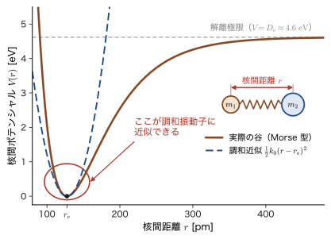
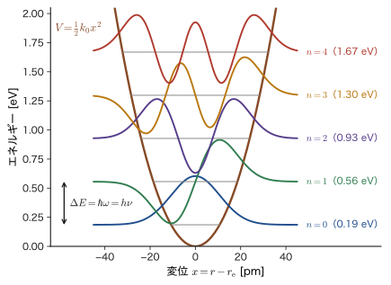
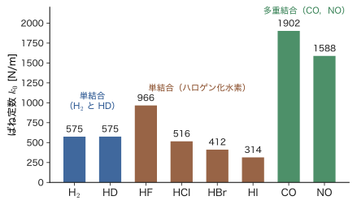
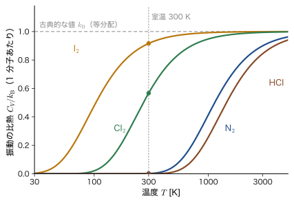

第19章分子の振動 — 調和振動子の応用
塩化水素 HCl の気体に，波長が 3.5 μm 付近（波数でいえば $2900\ \mathrm{cm^{-1}}$ 付近）の赤外線を当てると，光はほかの波長よりもはるかによく吸収される．窒素 $\mathrm{N_2}$ や酸素 $\mathrm{O_2}$ の気体にはこの吸収がない．吸収された光のエネルギーは，分子の 2 つの原子が互いに近づいたり離れたりする振動を 1 段階だけ強く励起するのに使われている．分子の赤外線吸収スペクトルは，結合の種類を見分ける「指紋」として，材料の分析（ガラスの中の Si–O 結合，高分子の C=O 結合，表面に吸着した分子など）で日常的に使われている．この章では，第13章で解いた調和振動子が，この分子の振動のもっとも簡単で，もっとも成功した模型であることを示す．
古典力学（AD 03 の単振動，第7章 7.1節）では，ばねの先の質量 $m$ の振動数は $\omega=\sqrt{k_0/m}$ で，エネルギーは振幅しだいでどんな値でもとれた．量子力学では，エネルギーは $\varepsilon_n=(n+\tfrac12)\hbar\omega$（分子全体の並進を除いた振動のエネルギーを，全エネルギー $E$ と区別して $\varepsilon_n$ と書く）のとびとびの値になり，準位の間隔は $\hbar\omega=h\nu$ でつねに等しい．そのために，赤外線の吸収は（ほぼ）1 本の線として現れ，その位置（波数）から，結合の硬さ（ばね定数 $k_0$）が数字で読める．この章では，(i) 2 つの原子を 1 つの粒子に置き換える換算質量と，「分子のポテンシャルの谷の底は放物線」という調和近似（harmonic approximation），(ii) 波数からばね定数を求める公式 $k_0=(2\pi c\tilde{\nu})^2\mu$ と，8 種類の 2 原子分子の表，(iii) 水素を重水素に置き換えたときに振動数が $1/\sqrt{2}$ に近い割合で下がる同位体効果（isotope effect）と零点エネルギー，(iv) 第13章で求めた調和振動子の運動量表示の結果を，分子振動の数値（HCl の $\Delta x$，$\Delta p$）に結びつけること，(v) 分子の振動が室温では「凍結」している理由と Einstein の比熱，を順に学ぶ．
この章で出てくる分子の話は，多原子分子（$3N-6$ 個の基準振動）や固体（フォノン，第60章）にそのままつながる．また，分子がなぜ調和振動子から少しずれるのかは，次章の Morse ポテンシャル（第20章）で扱う．
- 2 原子分子の運動を，重心の運動と，換算質量 $\mu=\dfrac{m_1m_2}{m_1+m_2}$ をもつ粒子の相対運動に分離できること（式変形の各行を自分で追えること）
- 安定な平衡点のまわりの Taylor 展開から $V(r)\approx\tfrac12k_0(r-r_{\mathrm e})^2$，$k_0=V''(r_{\mathrm e})$ を導き，準位 $\varepsilon_n=(n+\tfrac12)\hbar\omega$（$\omega=\sqrt{k_0/\mu}$）と $\Delta E=\hbar\omega=h\nu$ を説明できること
- 波数 $\tilde{\nu}\ [\mathrm{cm^{-1}}]$，振動数，エネルギー，波長を換算し，赤外の吸収波数からばね定数 $k_0=(2\pi c\tilde{\nu})^2\mu$ を計算できること（$\mathrm{H_2}$，HD，HF，HCl，HBr，HI，CO，NO の表）
- 赤外吸収の選択則 $\Delta n=\pm1$ と「双極子モーメントが変わる振動だけが赤外で見える」ことの予告
- 同位体置換（H→D，$^{35}\mathrm{Cl}\to{}^{37}\mathrm{Cl}$）による振動数の変化を予言し，零点エネルギーの差から解離エネルギーの差と速度論的同位体効果を見積もれること
- 第13章で求めた $\psi_0$，$\psi_1$ の運動量表示と $\phi_n=(-i)^n\psi_n$ の結果を，分子振動の数値（HCl の位置と運動量の広がり）に結びつけ，その意味を分子振動の言葉で説明できること
- 振動のエネルギー準位が離散的なため，室温で振動が「凍結」していることを，$\theta_{\mathrm{vib}}$ と Boltzmann 因子，Einstein 関数で説明できること
もとにしたノート：望月泰英『物理学ノート 量子力学2』 pp. 20–21．
19.1 2 原子分子は「ばねでつながれた 2 つの球」— 換算質量と調和近似
19.1.1 分子の振動を量子力学で扱う
塩化水素 HCl は，水素原子 H と塩素原子 Cl が 1 本の結合でつながった分子である．結合の長さ（核間距離 $r$．2 つの原子核の間の距離）は，ほぼ一定の値 $r_{\mathrm e}$ のまわりで絶えず伸び縮みしている．この伸び縮みが分子の振動で，そのエネルギーがとびとびの値をとること，そして赤外線が振動の準位間の遷移で吸収されることを，第13章の調和振動子の結果から理解しよう．
まず，何がこの伸び縮みを支配しているのかを整理しておく．分子の中では，原子核は電子に比べて桁違いに重い（陽子 1 個の質量は電子の約 1836 倍）．そのため電子は，原子核が少し動くたびに，その配置に合わせて瞬時に最もエネルギーの低い状態を組み直すと考えてよい．核間距離を $r$ に固定したときの，電子のエネルギーと原子核どうしの Coulomb 反発エネルギーの和を $r$ の関数として描いたものが，核間ポテンシャル $V(r)$ である．原子核は，この $V(r)$ の中を動く粒子として扱われる（Born–Oppenheimer 近似．詳しくは第33章で扱う）．$V(r)$ の形は，近づきすぎると原子核どうし（と内側の電子どうし）の反発で急激に上昇し，遠ざかると結合が切れて 2 個の原子になるので一定の値に近づく．その中間の $r_{\mathrm e}$ で最小になる．この谷の形が，分子の振動のすべてを決める（図19.2）．
以下では，分子の回転（第21章，第22章）は考えずに，結合の軸に沿った 2 つの原子の運動だけを調べる．軸を $z$ 軸にとり，質量 $m_1$ の原子 1 の位置を $z_1$，質量 $m_2$ の原子 2 の位置を $z_2$（$z_2\gt z_1$）とする．核間距離は $r=z_2-z_1$ である．
19.1.2 2 つの原子を 1 つの粒子に置き換える — 換算質量
2 個の原子の運動は，2 つの座標 $z_1$，$z_2$ の関数として記述しなければならない．ところが，ポテンシャルは核間距離 $z_2-z_1$ だけで決まるので，座標を取り替えれば，問題は 1 個の粒子の問題に帰着する．古典力学（AD 03，第2章 2.4節）で見た「重心の運動と相対運動の分離」を量子力学でもう一度行おう．
古典力学で確認しておく．原子 2 が原子 1 から受ける力は $-\dfrac{\partial V}{\partial z_2}=-V'(r)$，原子 1 が受ける力は $-\dfrac{\partial V}{\partial z_1}=+V'(r)$ である（$V$ は $z_2-z_1$ の関数なので，$z_1$ で微分すると符号が変わる）．運動方程式は $m_1\ddot{z}_1=V'(r)$，$m_2\ddot{z}_2=-V'(r)$ で，第 2 式を $m_2$ で，第 1 式を $m_1$ で割って引くと，
$$ \ddot{z}_2-\ddot{z}_1=-V'(r)\left(\frac{1}{m_2}+\frac{1}{m_1}\right)\qquad\Longrightarrow\qquad \mu\,\ddot{r}=-V'(r),\quad \frac{1}{\mu}=\frac{1}{m_1}+\frac{1}{m_2} $$となり，核間距離 $r$ は，質量 $\mu$ の 1 個の粒子がポテンシャル $V(r)$ の中で動く運動方程式に従う．量子力学でも同じことが起こる．
定義19.1 換算質量
質量 $m_1$，$m_2$ の 2 つの粒子に対して，
\begin{equation} \mu\equiv\frac{m_1m_2}{m_1+m_2}\qquad\left(\text{同じことだが}\quad\frac{1}{\mu}=\frac{1}{m_1}+\frac{1}{m_2}\right) \label{eq:19-mu} \end{equation}を換算質量（reduced mass）という．全質量は $M=m_1+m_2$ と書く．
注意：$\mu$ の別の意味との区別
本書では，$\mu$ は文脈によって別の量も表す．磁気モーメントの $\mu$（電子の $\mu_{\mathrm B}$ など，第26章），化学ポテンシャルの $\mu$（AD 03 の量子統計）である．この章の $\mu$ は，特に断らない限り換算質量である．なお，水素原子の電子と陽子の運動にも同じ形の換算質量が現れた（第5章 5.3節）．
定理19.1 2 原子分子の運動の分離
ポテンシャル $V(z_2-z_1)$ の中を動く質量 $m_1$，$m_2$ の 2 つの粒子の Hamilton 演算子
\begin{equation} \hat{H}=-\frac{\hbar^2}{2m_1}\frac{\partial^2}{\partial z_1^2}-\frac{\hbar^2}{2m_2}\frac{\partial^2}{\partial z_2^2}+V(z_2-z_1) \label{eq:19-H12} \end{equation}は，重心の座標 $Z=\dfrac{m_1z_1+m_2z_2}{M}$ と相対座標 $r=z_2-z_1$ を使うと，
\begin{equation} \hat{H}=\left[-\frac{\hbar^2}{2M}\frac{\partial^2}{\partial Z^2}\right]+\left[-\frac{\hbar^2}{2\mu}\frac{\partial^2}{\partial r^2}+V(r)\right] \label{eq:19-Hsep} \end{equation}となる．第 1 項は質量 $M$ の自由粒子（分子全体の並進運動），第 2 項は換算質量 $\mu$ の 1 個の粒子が $V(r)$ の中を動くときの Hamilton 演算子である．
導出
変数 $(z_1,z_2)$ から $(Z,r)$ への変換の偏微分係数は，$\dfrac{\partial Z}{\partial z_1}=\dfrac{m_1}{M}$，$\dfrac{\partial Z}{\partial z_2}=\dfrac{m_2}{M}$，$\dfrac{\partial r}{\partial z_1}=-1$，$\dfrac{\partial r}{\partial z_2}=+1$ である．連鎖律により
$$ \frac{\partial}{\partial z_1}=\frac{m_1}{M}\frac{\partial}{\partial Z}-\frac{\partial}{\partial r},\qquad \frac{\partial}{\partial z_2}=\frac{m_2}{M}\frac{\partial}{\partial Z}+\frac{\partial}{\partial r} $$となる．これを 2 回作用させると（$\partial_Z\partial_r=\partial_r\partial_Z$ を使う），
$$ \frac{\partial^2}{\partial z_1^2}=\left(\frac{m_1}{M}\right)^2\frac{\partial^2}{\partial Z^2}-\frac{2m_1}{M}\frac{\partial^2}{\partial Z\,\partial r}+\frac{\partial^2}{\partial r^2},\qquad \frac{\partial^2}{\partial z_2^2}=\left(\frac{m_2}{M}\right)^2\frac{\partial^2}{\partial Z^2}+\frac{2m_2}{M}\frac{\partial^2}{\partial Z\,\partial r}+\frac{\partial^2}{\partial r^2} $$である．これを $-\dfrac{\hbar^2}{2m_1}\dfrac{\partial^2}{\partial z_1^2}-\dfrac{\hbar^2}{2m_2}\dfrac{\partial^2}{\partial z_2^2}$ に代入し，項ごとに整理する．
- $\dfrac{\partial^2}{\partial Z^2}$ の係数：$-\dfrac{\hbar^2}{2m_1}\dfrac{m_1^2}{M^2}-\dfrac{\hbar^2}{2m_2}\dfrac{m_2^2}{M^2}=-\dfrac{\hbar^2}{2}\dfrac{m_1+m_2}{M^2}=-\dfrac{\hbar^2}{2M}$．
- $\dfrac{\partial^2}{\partial Z\,\partial r}$ の係数（交差項）：$-\dfrac{\hbar^2}{2m_1}\left(-\dfrac{2m_1}{M}\right)-\dfrac{\hbar^2}{2m_2}\left(\dfrac{2m_2}{M}\right)=\dfrac{\hbar^2}{M}-\dfrac{\hbar^2}{M}=0$．重心と相対座標を選んだので，交差項が消える．
- $\dfrac{\partial^2}{\partial r^2}$ の係数：$-\dfrac{\hbar^2}{2}\left(\dfrac{1}{m_1}+\dfrac{1}{m_2}\right)=-\dfrac{\hbar^2}{2\mu}$．
ポテンシャル項は $V(z_2-z_1)=V(r)$ なので，式 \eqref{eq:19-Hsep} を得る．
2 つの項は別々の変数だけを含む（$\partial_Z$ は $r$ に，$\partial_r$ は $Z$ に作用しない）ので，Schrödinger 方程式 $\hat{H}\Psi=E\Psi$ は変数分離できる．$\Psi(Z,r)=\Theta(Z)\,\chi(r)$ とおくと，第 1 項から $\Theta=e^{iKZ}$，エネルギー $\dfrac{\hbar^2K^2}{2M}$（分子全体が波数 $K$ で自由に動くときの並進エネルギー）が，第 2 項から相対運動の方程式
\begin{equation} \left[-\frac{\hbar^2}{2\mu}\frac{\dd^2}{\dd r^2}+V(r)\right]\chi(r)=\varepsilon\,\chi(r) \label{eq:19-rel} \end{equation}が得られ，全エネルギーは $E=\dfrac{\hbar^2K^2}{2M}+\varepsilon$ である．振動を決めるのは式 \eqref{eq:19-rel} だけである．
（導出終わり）
イメージ：換算質量は「動く原子の質量」
重心 $Z$ を固定した目で見ると，$z_1=Z-\dfrac{m_2}{M}r$，$z_2=Z+\dfrac{m_1}{M}r$ である．核間距離が $\Delta r$ だけ変わる（重心は動かない）とき，原子 1 は $\dfrac{m_2}{M}\Delta r$，原子 2 は $\dfrac{m_1}{M}\Delta r$ だけ，互いに逆向きに動く．軽いほうの原子がたくさん動き，重いほうの原子はわずかしか動かない．換算質量は，2 つの質量の「調和平均の半分」で，つねに軽いほうの質量より小さい：$\mu\lt\min(m_1,m_2)$．同じ質量なら $\mu=m/2$（水素分子 $\mathrm{H_2}$ では水素原子の質量の半分），$m_2\gg m_1$ なら $\mu\approx m_1$（軽い原子が重い原子のまわりを動く）である．
例題19.1 $\mathrm{H^{35}Cl}$ の換算質量
水素原子の質量を $m_{\mathrm H}=1.00783\ \mathrm{u}$，塩素 $^{35}\mathrm{Cl}$ の質量を $m_{\mathrm{Cl}}=34.96885\ \mathrm{u}$ とする（$1\ \mathrm{u}=1.660\,539\times10^{-27}\ \mathrm{kg}$ は原子質量単位）．$\mathrm{H^{35}Cl}$ の換算質量 $\mu$ を $\mathrm{u}$ と $\mathrm{kg}$ で求め，$m_{\mathrm H}$ との比を求めよ．
解答 式 \eqref{eq:19-mu} に代入する．分子は $1.00783\times34.96885=35.2427$，分母は $1.00783+34.96885=35.97668$ なので，
$$ \mu=\frac{35.2427}{35.97668}\ \mathrm{u}=0.97959\ \mathrm{u}=0.97959\times1.660539\times10^{-27}\ \mathrm{kg}=1.6267\times10^{-27}\ \mathrm{kg}. $$$m_{\mathrm H}$ との比は $\mu/m_{\mathrm H}=0.97959/1.00783=0.972$，すなわち換算質量は水素原子の質量より約 $2.8\ \%$ 小さいだけである．塩素原子は水素原子の約 35 倍重いので，HCl の振動は，「ほぼ動かない Cl に対して，H だけが振動する」と見てよい．
例題19.2 HCl の伸縮で H と Cl はどれだけ動くか
HCl の結合が，重心を動かさずに $10\ \mathrm{pm}$（$1\ \mathrm{pm}=10^{-12}\ \mathrm{m}$）だけ伸びた．H 原子と Cl 原子はそれぞれ何 pm 動いたか．また，振動の運動エネルギーのうち H 原子が担う割合はいくらか．
解答 全質量は $M=1.00783+34.96885=35.97668\ \mathrm{u}$ である．前の囲みの式で $\Delta r=10\ \mathrm{pm}$ とおくと，H（原子 1）は $\dfrac{m_{\mathrm{Cl}}}{M}\Delta r=\dfrac{34.96885}{35.97668}\times10\ \mathrm{pm}=9.72\ \mathrm{pm}$，Cl（原子 2）は $\dfrac{m_{\mathrm H}}{M}\Delta r=\dfrac{1.00783}{35.97668}\times10\ \mathrm{pm}=0.28\ \mathrm{pm}$ だけ，逆向きに動く（和は $10\ \mathrm{pm}$）．速さは動く距離に比例するので，運動エネルギー $\tfrac12m_iv_i^2$ の比は $m_{\mathrm H}\left(\dfrac{m_{\mathrm{Cl}}}{M}\right)^2:m_{\mathrm{Cl}}\left(\dfrac{m_{\mathrm H}}{M}\right)^2=m_{\mathrm{Cl}}:m_{\mathrm H}$ となり，H が担う割合は $\dfrac{m_{\mathrm{Cl}}}{m_{\mathrm H}+m_{\mathrm{Cl}}}=0.972$，すなわち $97\ \%$ である．これは換算質量が $m_{\mathrm H}$ に近いことの別の表現である．
19.1.3 ポテンシャルの谷の底は放物線 — 調和近似
相対運動の方程式 \eqref{eq:19-rel} を解くには $V(r)$ の具体的な形が必要だが，実は，ほとんどの場合に必要なのは谷の底の近くの形だけである．低いエネルギー状態の分子は，谷の底 $r_{\mathrm e}$ のまわりの狭い範囲でしか動かないからである．谷の底の近くを放物線で置き換えるこの近似を調和近似（harmonic approximation）という．
定理19.2 調和近似（谷の底は放物線）
核間ポテンシャル $V(r)$ が $r=r_{\mathrm e}$ で極小になるとき，伸び $x=r-r_{\mathrm e}$（$=z_2-z_1-r_{\mathrm e}$）が小さければ，
\begin{equation} V(r)\approx V(r_{\mathrm e})+\frac12k_0\,x^2,\qquad k_0\equiv V''(r_{\mathrm e})\gt0 \label{eq:19-k0} \end{equation}と近似できる．エネルギーの原点を $V(r_{\mathrm e})=0$ にとれば $V\approx\tfrac12k_0(r-r_{\mathrm e})^2$ である．$k_0$ をばね定数（力の定数）といい，単位は $\mathrm{N/m}$（$=\mathrm{J/m^2}$）である．
導出
$r_{\mathrm e}$ のまわりで Taylor 展開する（大学基礎物理学 第4章 4.6）：
$$ V(r)=V(r_{\mathrm e})+V'(r_{\mathrm e})\,x+\frac12V''(r_{\mathrm e})\,x^2+\frac16V'''(r_{\mathrm e})\,x^3+\cdots\qquad(x=r-r_{\mathrm e}) $$$r_{\mathrm e}$ は $V$ が極小になる点（安定なつり合いの位置）なので，力 $-V'(r_{\mathrm e})$ は $0$ であり，1 次の項は消える．極小なので $V''(r_{\mathrm e})\gt0$ で，これを $k_0$ とおく．$x$ が小さければ 3 次以上の項は 2 次の項より小さいので落とすと，式 \eqref{eq:19-k0} を得る．力は $F=-\dfrac{\dd V}{\dd x}=-k_0x$ で，Hooke の法則（ばねの力）になる．
（導出終わり）
ばね定数 $k_0$ は，谷の底の「曲がり方の強さ」（曲率）である．谷が深く狭いほど $k_0$ は大きく，結合は硬い．図19.2 に，HCl の核間ポテンシャルを（形を見せるために，第20章の Morse ポテンシャルで）描く．左側の壁は急で，右側の上り坂はゆるやかに一定の値（解離極限）に近づく非対称な形である．赤い円で囲んだ谷の底の近くでは，破線の放物線（調和近似）が曲線とよく重なっている．この赤い円の中が，調和振動子に近似できる範囲である．横軸の $r$ は図19.1 の核間距離で，図の右上の小さな模型が，その 2 つの原子の間の距離を表す．

注意：調和近似がよいのは谷の底の近くだけ
放物線は上下・左右で対称だが，実際のポテンシャルは非対称で，右側には解離極限がある．近似がよいのは，振動の振幅が小さい（$n$ が小さい）ときだけである．振幅が大きくなると，準位の間隔は等間隔からずれ（非調和性），$V$ が解離極限に達すると分子は解離する．この非調和性を式で表すのが Morse ポテンシャル（第20章）である．
例題19.3 調和近似の誤差 — HCl を $\pm20\ \mathrm{pm}$ 動かしたとき
HCl のポテンシャルを Morse 型 $V(x)=D_{\mathrm e}\left(1-e^{-ax}\right)^2$（$x=r-r_{\mathrm e}$．第20章で詳しく扱う）で表す．谷の深さを $D_{\mathrm e}=4.62\ \mathrm{eV}$（$=7.40\times10^{-19}\ \mathrm{J}$），ばね定数を $k_0=516\ \mathrm{N/m}$ とする．(1) $x$ が小さいとき $V\approx\tfrac12k_0x^2$ になることから，$a$ を $D_{\mathrm e}$ と $k_0$ で表し，値を求めよ．(2) 結合を $x=+20\ \mathrm{pm}$ 伸ばしたとき，および $x=-20\ \mathrm{pm}$ 縮めたときの $V$ を，Morse 型と調和近似で比べよ．
解答 (1) $e^{-ax}=1-ax+\tfrac12a^2x^2-\cdots$ より $1-e^{-ax}=ax-\tfrac12a^2x^2+\cdots$．2 乗して $\left(1-e^{-ax}\right)^2=a^2x^2-a^3x^3+\cdots$．よって $V=D_{\mathrm e}a^2x^2-D_{\mathrm e}a^3x^3+\cdots$．第 1 項が $\tfrac12k_0x^2$ に等しいので $k_0=2D_{\mathrm e}a^2$，すなわち
$$ a=\sqrt{\frac{k_0}{2D_{\mathrm e}}}=\sqrt{\frac{516}{2\times7.40\times10^{-19}}}=\sqrt{3.49\times10^{20}}=1.87\times10^{10}\ \mathrm{m^{-1}}=1.87\ \mathring{\mathrm{A}}^{-1}. $$(2) $x=+20\ \mathrm{pm}$ のとき，$ax=1.87\times10^{10}\times2.0\times10^{-11}=0.373$，$e^{-0.373}=0.689$，$(1-0.689)^2=0.0971$ なので $V=4.62\ \mathrm{eV}\times0.0971=0.449\ \mathrm{eV}$．調和近似は $\tfrac12k_0x^2=\tfrac12\times516\times(2.0\times10^{-11})^2=1.03\times10^{-19}\ \mathrm{J}=0.645\ \mathrm{eV}$ で，実際より約 $44\ \%$ 高い．
$x=-20\ \mathrm{pm}$ のときは $ax=-0.373$，$e^{+0.373}=1.452$，$(1-1.452)^2=0.205$ なので $V=4.62\times0.205=0.95\ \mathrm{eV}$．調和近似の $0.645\ \mathrm{eV}$ より約 $47\ \%$ 高い（実際の壁のほうが急）．結合を縮める側（左）は実際の壁のほうが急で，伸ばす側（右）はなだらかである．$\pm20\ \mathrm{pm}$ は平衡核間距離 $127\ \mathrm{pm}$ の約 $16\ \%$ であり，「小さな振動」の範囲を超えると調和近似が急速に悪くなることがわかる．（$\pm10\ \mathrm{pm}$ では，Morse 型が $0.134\ \mathrm{eV}$，$0.195\ \mathrm{eV}$，調和近似が $0.161\ \mathrm{eV}$ で，Morse 型は調和近似よりそれぞれ約 $17\ \%$ 低く，約 $21\ \%$ 高いだけで，ずれは縮む．）
19.1.4 Schrödinger 方程式と準位 — 等間隔のはしご
谷の底 $V(r_{\mathrm e})$ をエネルギーの原点にとり，$r$ を伸び $x=r-r_{\mathrm e}$ に書き換える．$\dfrac{\dd^2}{\dd r^2}=\dfrac{\dd^2}{\dd x^2}$ なので，式 \eqref{eq:19-rel} に式 \eqref{eq:19-k0} を代入すると，
\begin{equation} \left[-\frac{\hbar^2}{2\mu}\frac{\dd^2}{\dd x^2}+\frac12k_0x^2\right]\chi(x)=\varepsilon\,\chi(x) \label{eq:19-ho} \end{equation}となる．これは，第13章で解いた調和振動子の方程式で，質量 $m$ を換算質量 $\mu$ に置き換え，ばね定数を $k_0=\mu\omega^2$ とおいたものと同じ形である．$x$ の範囲は本当は $x\gt-r_{\mathrm e}$（$r\gt0$）だが，波動関数が $\lvert x\rvert\gt3x_0$ ではほぼ $0$ なので，第13章と同じく $-\infty\lt x\lt\infty$ まで広げてよい（理由は，次の定理の後の「イメージ」の囲みで述べる）．したがって第13章の結果が使える．
この章では，準位のエネルギーを $E_n$ でなく $\varepsilon_n$ と書く．式 \eqref{eq:19-Hsep} のとおり，全エネルギー $E$ には分子全体の並進エネルギー $\hbar^2K^2/2M$ が含まれるので，それを除いた相対運動（振動）の分を $\varepsilon_n$ と書いて区別するためである．第13章の $E_n$ と同じ量である．また，隣り合う準位の間隔（吸収される光子のエネルギー）を $\Delta E=\varepsilon_{n+1}-\varepsilon_n$ と書く．
定理19.3 2 原子分子の振動準位（調和近似）
調和近似での分子の振動のエネルギーは，
\begin{equation} \varepsilon_n=\left(n+\frac12\right)\hbar\omega,\qquad \omega=\sqrt{\frac{k_0}{\mu}}\qquad(n=0,1,2,\dots) \label{eq:19-En} \end{equation}である．波動関数は第13章の $\psi_n$ で $m\to\mu$ としたもの，すなわち $\chi_n(x)=\left(\dfrac{\mu\omega}{\pi\hbar}\right)^{1/4}\dfrac{1}{\sqrt{2^nn!}}H_n\!\left(\dfrac{x}{x_0}\right)e^{-x^2/2x_0^2}$，$x_0=\sqrt{\dfrac{\hbar}{\mu\omega}}$ である．隣り合う準位の間隔は $n$ によらず一定で，
\begin{equation} \Delta E=\varepsilon_{n+1}-\varepsilon_n=\hbar\omega=h\nu,\qquad \nu=\frac{\omega}{2\pi}=\frac{1}{2\pi}\sqrt{\frac{k_0}{\mu}} \label{eq:19-dE} \end{equation}準位が等間隔であることは，箱の中の粒子（$E_n\propto n^2$，間隔が上ほど広がる．第10章）や水素原子（$E_n\propto-1/n^2$，間隔が上ほど縮まる）と対照的である．式 \eqref{eq:19-dE} の $\nu$ は，古典力学で 2 つの質量が同じ $k_0$ のばねでつながれたときの振動数 $\dfrac{1}{2\pi}\sqrt{k_0/\mu}$ と同じである．分子の吸収する光の振動数が，古典的な振動の振動数と一致することは，Bohr の対応原理（第5章 5.5節）の一例と見ることができる．図19.3 に，HCl の準位と波動関数を示す．

イメージ：$x_0$ は結合の長さに比べて小さい
振動を「原点のまわりの $x$ の範囲だけ」で調べてよいのは，波動関数の広がり $x_0=\sqrt{\hbar/(\mu\omega)}$ が結合の長さ $r_{\mathrm e}$ よりずっと小さいからである．HCl では，第13章の例題13.3 で見たとおり $x_0=10.7\ \mathrm{pm}$ で，$r_{\mathrm e}\approx127\ \mathrm{pm}$ の 8 % 程度である．$r=r_{\mathrm e}+x$ は本来 $r\gt0$（$x\gt-r_{\mathrm e}$）の範囲でしか意味をもたないが，$\chi_n(x)$ は $\lvert x\rvert\gt3x_0\approx32\ \mathrm{pm}$ ではほぼ $0$ なので，$x\to-\infty$ まで積分する近似で問題はない．
回転との関係
実際の分子は，核間距離を変えるだけでなく，重心のまわりの回転もする．3 次元の相対運動では，$V(r)$ に回転の項 $\dfrac{\hbar^2l(l+1)}{2\mu r^2}$（第14章の遠心力ポテンシャル）が加わる．回転のエネルギーは，HCl では $10\ \mathrm{cm^{-1}}$ 程度（回転定数 $B\approx10.6\ \mathrm{cm^{-1}}$）の刻みで，振動の $3000\ \mathrm{cm^{-1}}$ 程度の刻みよりずっと小さい．そこで，振動と回転を近似的に分けて扱ってよい（回転は第22章で扱う）．
19.2 赤外スペクトルとばね定数 — 波数から結合の硬さを読む
19.2.1 波数・振動数・エネルギーの換算
赤外分光では，光の「位置」を波長ではなく，1 cm の間に含まれる波の数である波数（wavenumber）で表す習慣がある．波長 $\lambda$ の光の波数は $\tilde{\nu}=\dfrac{1}{\lambda}$ で，単位は $\mathrm{cm^{-1}}$（「カイザー」とも読む）である．光速 $c$，振動数 $\nu$ とは $\lambda\nu=c$ の関係にあるので，
\begin{equation} \tilde{\nu}=\frac{1}{\lambda}=\frac{\nu}{c},\qquad \nu=c\tilde{\nu},\qquad \omega=2\pi\nu=2\pi c\tilde{\nu},\qquad E=h\nu=hc\tilde{\nu} \label{eq:19-wn} \end{equation}である．波数は光子のエネルギーに比例するので，エネルギー準位の間隔を直接読みやすく，分子の振動では $10^2$〜$10^4\ \mathrm{cm^{-1}}$ の手ごろな数値になる．そのため，分光学ではエネルギーの単位としても $\mathrm{cm^{-1}}$ が使われる．
注意：波数の $\tilde{\nu}$ と $k$，ばね定数の $k_0$，$k_{\mathrm B}$
物理学で「波数」というと，$k=2\pi/\lambda$（単位 $\mathrm{rad/m}$．本書の第10章以降の $k$）を指すことが多い．分光学の波数 $\tilde{\nu}=1/\lambda$ とは $2\pi$ だけ違い，$k=2\pi\tilde{\nu}$ である．混同を避けるため，分光学の波数は分光学の標準の記号 $\tilde{\nu}$（単位 $\mathrm{cm^{-1}}$）と書く（第13章の $\tilde{\nu}$ と同じ量である．第20章の分光定数 $\omega_{\mathrm e}$ は，小さな振動についての波数という別の量で，第20章 20.1 節で $\tilde{\nu}$ との関係を述べる）．ばね定数は添字をつけて $k_0$，Boltzmann 定数は $k_{\mathrm B}$ と書き，これらの $k$ を区別する．とくに，本章のばね定数 $k_0$ は，第12章の波数 $k_0=\sqrt{2mE}/\hbar$（第12章）とは別の量である．19.4 節で Fourier 変換の変数として使う $k$（$=p/\hbar$）は，$2\pi/\lambda$ のほうの波数である．
| 量 | $1\ \mathrm{cm^{-1}}$ に相当する値 | 逆向きの換算 |
|---|---|---|
| 波長 $\lambda$ | $1\ \mathrm{cm}$ | $\lambda\,[\mu\mathrm{m}]=10^4/\tilde{\nu}\,[\mathrm{cm^{-1}}]$ |
| 振動数 $\nu=c\tilde{\nu}$ | $29.979\ \mathrm{GHz}$ | $1\ \mathrm{THz}=33.356\ \mathrm{cm^{-1}}$ |
| 光子のエネルギー $hc\tilde{\nu}$ | $1.2398\times10^{-4}\ \mathrm{eV}$ | $1\ \mathrm{eV}=8065.5\ \mathrm{cm^{-1}}$ |
| モルあたりのエネルギー | $0.011963\ \mathrm{kJ/mol}$ | $1\ \mathrm{kJ/mol}=83.594\ \mathrm{cm^{-1}}$ |
| 温度 $hc\tilde{\nu}/k_{\mathrm B}$ | $1.4388\ \mathrm{K}$ | $k_{\mathrm B}T\ (300\ \mathrm{K})=208.5\ \mathrm{cm^{-1}}$ |
19.2.2 赤外の吸収波数からばね定数を求める
定理19.3 より，振動の準位の間隔は $\Delta E=\hbar\omega$ で，$\omega=\sqrt{k_0/\mu}$ である．一方，この間隔に等しいエネルギーの光子が吸収されるので，その光子の波数（調和振動子としての波数．非調和性を無視すれば，吸収線の位置と等しい．19.2.3 節の注意を見よ）を $\tilde{\nu}$ とすれば，式 \eqref{eq:19-wn} より $\Delta E=hc\tilde{\nu}$ である．つまり
$$ \hbar\omega=\hbar\sqrt{\frac{k_0}{\mu}}=hc\tilde{\nu} $$である（$\hbar\omega=\dfrac{h}{2\pi}\cdot2\pi\nu=h\nu=hc\tilde{\nu}$）．式の中の $k_0$ がばね定数，$\tilde{\nu}$ が波数である．両辺を $\hbar$ で割ると $\sqrt{k_0/\mu}=\dfrac{hc\tilde{\nu}}{\hbar}=2\pi c\tilde{\nu}$ となり，2 乗して $\mu$ を掛けると，次の公式を得る．
公式19.1 吸収波数からばね定数を求める
\begin{equation} k_0=(2\pi c\tilde{\nu})^2\,\mu \label{eq:19-kk} \end{equation}$c$ は光速，$\tilde{\nu}$ は調和振動子としての波数（ほぼ吸収線の位置．SI 単位では $\mathrm{m^{-1}}$），$\mu$ は換算質量である．
単位を確かめよう．$c\tilde{\nu}$ は $\dfrac{\mathrm{m}}{\mathrm{s}}\cdot\dfrac{1}{\mathrm{m}}=\mathrm{s^{-1}}$（振動数の単位）なので，$(2\pi c\tilde{\nu})^2\mu$ は $\mathrm{s^{-2}\,kg}=\mathrm{kg/s^2}=\mathrm{N/m}$ となり，ばね定数の単位に合う．なお，波数を $\mathrm{cm^{-1}}$ で表した値を式に入れるときは，$1\ \mathrm{cm^{-1}}=100\ \mathrm{m^{-1}}$ の換算を忘れないこと．
例19.1 HCl のばね定数
HCl の振動の調和振動子としての波数（ほぼ吸収線の位置）を $\tilde{\nu}=2990\ \mathrm{cm^{-1}}$，HCl の換算質量を $\mu=1.62\times10^{-27}\ \mathrm{kg}$ として，ばね定数 $k_0$ を求めよ．
解答 $\tilde{\nu}=2990\ \mathrm{cm^{-1}}=2.99\times10^{5}\ \mathrm{m^{-1}}$，光速を $c=3.00\times10^{8}\ \mathrm{m/s}$ とすると，
$$ 2\pi c\tilde{\nu}=2\pi\times3.00\times10^{8}\times2.99\times10^{5}=5.64\times10^{14}\ \mathrm{s^{-1}}\quad(=\omega) $$である．これを 2 乗して $\mu$ を掛けると，公式19.1 より
$$ k_0=(2\pi c\tilde{\nu})^2\mu=(5.64\times10^{14})^2\times1.62\times10^{-27}=3.18\times10^{29}\times1.62\times10^{-27}=5.1\times10^{2}\ \mathrm{N/m}. $$（例題19.1 の値 $\mu=1.6267\times10^{-27}\ \mathrm{kg}$ を使うと $5.16\times10^{2}\ \mathrm{N/m}$ である．）
ここでは，非調和性を無視して，吸収線の波数を調和振動子の波数（分光学の $\omega_{\mathrm e}$）と同一視した．実測される基本音（$n=0\to1$）の吸収帯の位置 約 $2886\ \mathrm{cm^{-1}}$ をそのまま入れると，$k_0\approx4.8\times10^{2}\ \mathrm{N/m}$（$481\ \mathrm{N/m}$）と，約 $7\ \%$ 小さい値になる．この違いの理由と補正は，19.2.3 節の注意と第20章で述べる．
$5\times10^2\ \mathrm{N/m}$ は，実験室にある普通のばね（$10\ \mathrm{N/m}$ 程度）の 50 倍ほどの硬さである．同じ硬さのばねを $1\ \mathrm{cm}$ 伸ばすには約 $5\ \mathrm{N}$（約 $0.5\ \mathrm{kg}$ の物体の重さ）の力が要る．原子 1 個を動かすばねとしてはかなり強く結ばれているといえる．軽い水素原子が，この硬いばねにつながれているので，振動数は $9\times10^{13}\ \mathrm{Hz}$ という非常に高い値になる．
例題19.4 HCl の振動の周期・波長・エネルギー
H$^{35}$Cl の調和振動子としての波数を $\tilde{\nu}=2990.95\ \mathrm{cm^{-1}}$，換算質量を $\mu=1.6267\times10^{-27}\ \mathrm{kg}$ とする．(1) 振動数 $\nu$，周期，(2) 振動に相当する光の波長，(3) $\hbar\omega$ を $\mathrm{eV}$ で，(4) ばね定数 $k_0$ を求めよ．
解答 $\tilde{\nu}=2990.95\ \mathrm{cm^{-1}}=2.99095\times10^{5}\ \mathrm{m^{-1}}$ で，$c=2.99792\times10^{8}\ \mathrm{m/s}$ とする．
(1) $\nu=c\tilde{\nu}=2.99792\times10^{8}\times2.99095\times10^{5}=8.9667\times10^{13}\ \mathrm{Hz}$（約 $90\ \mathrm{THz}$）．周期は $T=1/\nu=1.1152\times10^{-14}\ \mathrm{s}=11.2\ \mathrm{fs}$（$1\ \mathrm{fs}=10^{-15}\ \mathrm{s}$）．分子は 1 秒間に約 $9\times10^{13}$ 回という猛烈な速さで伸び縮みしている（光が 1 周期の間に進む距離は，次の (2) の波長 $3.34\ \mu\mathrm{m}$ にちょうど等しい）．
(2) $\lambda=1/\tilde{\nu}=1/(2.99095\times10^{5}\ \mathrm{m^{-1}})=3.3434\times10^{-6}\ \mathrm{m}=3.34\ \mu\mathrm{m}$．赤外線（波長 $0.78\ \mu\mathrm{m}$ 以上）の領域にある．
(3) $\hbar\omega=h\nu=6.62607\times10^{-34}\times8.9667\times10^{13}=5.9415\times10^{-20}\ \mathrm{J}=\dfrac{5.9415\times10^{-20}}{1.602177\times10^{-19}}\ \mathrm{eV}=0.3708\ \mathrm{eV}$．表19.1 の換算では $2990.95\times1.2398\times10^{-4}=0.3708\ \mathrm{eV}$ で一致する．
(4) $\omega=2\pi\nu=5.6338\times10^{14}\ \mathrm{s^{-1}}$ なので，$k_0=\mu\omega^2=1.6267\times10^{-27}\times(5.6338\times10^{14})^2=1.6267\times10^{-27}\times3.1740\times10^{29}=516\ \mathrm{N/m}$．
19.2.3 8 種類の 2 原子分子のばね定数
公式19.1 を使って，代表的な 2 原子分子の赤外吸収の波数からばね定数を計算した結果を表19.2 に示す．換算質量は各原子の質量（例：$\mathrm{H}=1.00783\ \mathrm{u}$，$\mathrm{D}=2.01410\ \mathrm{u}$，$^{35}\mathrm{Cl}=34.96885\ \mathrm{u}$）から式 \eqref{eq:19-mu} で求めた．D は重水素（deuterium）の記号で，陽子 1 個に中性子 1 個が加わった水素の同位体（質量数 2，$^{2}\mathrm{H}$ とも書く）である．天然の水素のおよそ 6400 個に 1 個（約 $0.016\ \%$）が D で，1932 年に Urey らが発見した．HD は，H 原子 1 個と D 原子 1 個からなる分子である．
| 分子 | $\tilde{\nu}\ [\mathrm{cm^{-1}}]$ | $\mu\ [10^{-27}\ \mathrm{kg}]$ | $k_0\ [\mathrm{N/m}]$ | $\hbar\omega\ [\mathrm{eV}]$ | $r_{\mathrm e}\ [\mathrm{pm}]$ |
|---|---|---|---|---|---|
| $\mathrm{H_2}$ | 4400 | 0.8368 | 575 | 0.546 | 74.1 |
| HD | 3813 | 1.115 | 575 | 0.473 | 74.1 |
| HF | 4140 | 1.589 | 966 | 0.513 | 91.7 |
| HCl | 2990 | 1.627 | 516 | 0.371 | 127.5 |
| HBr | 2650 | 1.652 | 412 | 0.329 | 141.4 |
| HI | 2310 | 1.660 | 314 | 0.286 | 160.9 |
| CO | 2170 | 11.39 | 1902 | 0.269 | 112.8 |
| NO | 1900 | 12.40 | 1588 | 0.236 | 115.1 |
表の波数は 3〜4 桁に丸めた値である．より精密な値（$\mathrm{H_2}$ が $4401.2\ \mathrm{cm^{-1}}$，HCl が $2990.95\ \mathrm{cm^{-1}}$ など）は，以下の例題と表19.3，表19.4 で使う．HCl の波数が $2990$，$2990.95$，$2991\ \mathrm{cm^{-1}}$ と書かれていても，すべて同じ量（有効数字の桁数が違うだけ）である．

表19.2 から読み取れることを挙げる（図19.4 は，ばね定数を棒グラフにしたものである）．
- $\mathrm{H_2}$ と HD のばね定数は等しい（どちらも約 $575\ \mathrm{N/m}$）．一方，波数は $4400$ と $3813\ \mathrm{cm^{-1}}$ と大きく違う．これは，水素を重水素に置き換えても結合の硬さ（電子がつくるポテンシャル）は変わらず，質量だけが変わるためである（19.3 節）．
- HF，HCl，HBr，HI と，ハロゲンが重くなるにつれ $k_0$ は $966\to516\to412\to314\ \mathrm{N/m}$ と小さくなる．結合が長くなる（$91.7\to160.9\ \mathrm{pm}$）ほど結合は軟らかい．換算質量はほとんど変わらない（どれも $\mu\approx m_{\mathrm H}$）ので，波数の低下がそのまま結合の軟らかさを表している．
- CO の $1902\ \mathrm{N/m}$ は HCl の 3.7 倍で，表の中で最も硬い．CO は三重結合で，NO（結合次数 2.5）の $1588\ \mathrm{N/m}$ も大きい．結合の多重度が高い（電子が結合にたくさん入る）ほど，結合は短く，硬い．波数は換算質量が大きい CO で小さいが，$k_0$ は大きいことに注意．
注意：表の波数は「調和振動子とみなした波数」である
実際の分子の振動準位は，非調和性のために厳密には等間隔でなく，高い準位ほど間隔が少しずつ縮む．観測される基本音（$n=0\to1$）の吸収帯の位置は，調和振動子とみなした波数より少し低く，たとえば HCl では約 $2886\ \mathrm{cm^{-1}}$，CO では約 $2143\ \mathrm{cm^{-1}}$ である．表19.2 の波数は，この非調和性の補正を取り除いた調和振動子の波数（分光学では $\omega_{\mathrm e}$ と書く）に近い値で，$k_0=V''(r_{\mathrm e})$ という「谷の底の曲率」を求めるにはこちらを使うのが正しい．その違いは第20章で式にする．
例題19.5 表の $k_0$ を自分で計算する — $\mathrm{H_2}$ と HI
表19.2 の $\mathrm{H_2}$（$\tilde{\nu}=4400\ \mathrm{cm^{-1}}$，$\mu=8.368\times10^{-28}\ \mathrm{kg}$）と HI（$\tilde{\nu}=2310\ \mathrm{cm^{-1}}$，$\mu=1.660\times10^{-27}\ \mathrm{kg}$）のばね定数を，公式19.1 から求めよ．
解答 $\mathrm{H_2}$：$\tilde{\nu}=4400\ \mathrm{cm^{-1}}=4.400\times10^{5}\ \mathrm{m^{-1}}$ なので $\omega=2\pi c\tilde{\nu}=2\pi\times2.99792\times10^{8}\times4.400\times10^{5}=8.288\times10^{14}\ \mathrm{s^{-1}}$，$\omega^2=6.869\times10^{29}\ \mathrm{s^{-2}}$．よって
$$ k_0=\omega^2\mu=6.869\times10^{29}\times8.368\times10^{-28}=5.75\times10^{2}\ \mathrm{N/m}. $$HI：$\tilde{\nu}=2.310\times10^{5}\ \mathrm{m^{-1}}$ から $\omega=2\pi\times2.99792\times10^{8}\times2.310\times10^{5}=4.351\times10^{14}\ \mathrm{s^{-1}}$，$\omega^2=1.893\times10^{29}\ \mathrm{s^{-2}}$．よって
$$ k_0=1.893\times10^{29}\times1.660\times10^{-27}=3.14\times10^{2}\ \mathrm{N/m}. $$$\mathrm{H_2}$ のほうが HI より $\mu$ は約 $2$ 分の $1$ だが，波数（の 2 乗）が約 $3.6$ 倍なので，$k_0$ は約 $1.8$ 倍になる．
19.2.4 赤外線の吸収と選択則の予告
分子が赤外線を吸収して準位 $n$ から $n'$ に遷移するには，光子のエネルギーが準位の差に等しくなければならない：$h\nu_{\mathrm{photon}}=\varepsilon_{n'}-\varepsilon_n$．調和近似では準位が等間隔なので，隣り合う準位間（$n\to n+1$）の遷移は，どの $n$ でもすべて同じエネルギー $\hbar\omega=h\nu$ をもつ．そのため，吸収線は $\nu=\dfrac{1}{2\pi}\sqrt{k_0/\mu}$ の 1 本になる．しかも，遷移できるのは隣り合う準位間だけで，$n\to n\pm1$ である．これを選択則（selection rule）といい，$\Delta n=\pm1$ と書く（図19.5）．
理由の概略を述べる．光の電場が分子に及ぼす作用は，電気双極子モーメント $d$ と電場の相互作用 $-d\,E$ で表される．振動によって $d$ が変化するとき，$d$ を平衡の位置 $x=0$ のまわりで展開すると $d(x)\approx d_0+\dfrac{\dd d}{\dd x}\bigg|_0x$ となる．定数項 $d_0$ は，異なる固有状態が直交する（$\braket{n'}{n}=0$，$n'\ne n$）ために，遷移に寄与しない（永久双極子モーメントだけでは吸収は起こらない）．残る第 2 項から，遷移の強さ（吸収の強度）は，行列要素の絶対値の 2 乗 $\left\lvert\dfrac{\dd d}{\dd x}\bigg|_0\bra{n'}\hat{x}\ket{n}\right\rvert^2$ に比例する（遷移の確率は振幅の 2 乗）．調和振動子の波動関数では，$\bra{n'}\hat{x}\ket{n}$ は $n'=n\pm1$ のときだけ $0$ でない（第13章 13.8.1節）．時間に依存する摂動論による導出は，Fermi の黄金律（第51章）と電気双極子近似（第52章）で行う．ここでは，次の 2 点を使えばよい．
- $\Delta n=\pm1$（調和近似では，$\Delta n=\pm2$ などの倍音は現れない．実際の分子では非調和性のため，倍音がごく弱く現れる）．
- 振動で双極子モーメントが変化する分子だけが赤外線を吸収する（赤外活性，IR active）．$\dfrac{\dd d}{\dd x}=0$ なら遷移の強さが $0$ になる．同じ原子が 2 つ並んだ等核 2 原子分子（$\mathrm{H_2}$，$\mathrm{N_2}$，$\mathrm{O_2}$）は，どれだけ伸び縮みしても双極子モーメントが $0$ のままなので，赤外線を吸収しない（赤外不活性）．HCl，CO，NO のような異核 2 原子分子は，伸び縮みで双極子モーメントが変化し，赤外活性である．
例題19.6 赤外で見える分子・見えない分子
$\mathrm{H_2}$，$\mathrm{N_2}$，$\mathrm{O_2}$，HCl，CO のうち，振動の赤外吸収が観測されるものはどれか．理由も述べよ．また，HCl の吸収帯の中心が調和近似の波数より低い理由を，準位の間隔で説明せよ．
解答 赤外線が吸収されるには，振動によって電気双極子モーメントが変化しなければならない．$\mathrm{H_2}$，$\mathrm{N_2}$，$\mathrm{O_2}$ は同じ原子 2 個からなり，結合がどれだけ伸縮しても電荷の分布は 2 つの原子に対して対称なので，双極子モーメントは $0$ のままである．したがってこれら 3 つは赤外不活性（吸収なし）である．HCl は H が正，Cl が負に偏った双極子をもち，結合が伸びるとその大きさが変わる．CO も同様である．したがって HCl と CO は赤外活性で，吸収が観測される．
後半：調和振動子なら $\varepsilon_1-\varepsilon_0=\hbar\omega$ だが，実際のポテンシャルは，谷の右側（結合を伸ばす側）が放物線より低い（図19.2）．準位が高くなるほど，波動関数は右側の低い部分に広がるので，エネルギーの上がり方が調和振動子より小さい．したがって準位の間隔は上ほど縮み，$n=0\to1$ の間隔 $\varepsilon_1-\varepsilon_0$ も，$\hbar\omega$（谷の底の曲率から決まる値）よりわずかに小さくなる．HCl では，この差が $2990.95\to$ 約 $2886\ \mathrm{cm^{-1}}$（約 $3.5\ \%$）である．
応用：赤外分光は結合の「指紋」
結合が硬い（$k_0$ が大きい）ほど，また結んでいる原子が軽い（$\mu$ が小さい）ほど，吸収の波数は高い．そのため，赤外吸収スペクトルの吸収線の位置から，物質の中の結合の種類を見分けることができる．たとえば，O–H 結合（水，水酸基）の伸縮は約 $3400\ \mathrm{cm^{-1}}$ 付近（水素結合で幅が広がる），C=O 結合は約 $1700\ \mathrm{cm^{-1}}$ 付近に吸収をもち，ガラス（$\mathrm{SiO_2}$）では Si–O–Si 結合の吸収が約 $1000$〜$1100\ \mathrm{cm^{-1}}$ にある．FTIR（Fourier 変換赤外分光）は，薄膜の組成，高分子，触媒の表面に吸着した分子（例：Pt 表面に吸着した CO）などの分析に広く使われる．大気の $\mathrm{CO_2}$ の反対称伸縮振動（約 $2349\ \mathrm{cm^{-1}}$）は赤外線を強く吸収し，これが $\mathrm{CO_2}$ の温室効果の一因になっている．
関連シミュレーター：調和振動子 ― ばねと波動関数（ばねの硬さと質量を変えたときの準位と波動関数）．
19.3 同位体効果と零点エネルギー
19.3.1 同じポテンシャル，違う質量
Born–Oppenheimer 近似の考え方（19.1.1 節）では，核間ポテンシャル $V(r)$ は電子のエネルギーで決まり，原子核の質量にはほとんど依存しない．したがって，水素 H を重水素 D に置き換えたり，塩素の同位体 $^{35}\mathrm{Cl}$ を $^{37}\mathrm{Cl}$ に置き換えたりしても，ポテンシャルの谷の形，つまりばね定数 $k_0$ は（高い精度で）変わらず，換算質量 $\mu$ だけが変わる．すると $\omega=\sqrt{k_0/\mu}$ より，同位体置換後の波数 $\tilde{\nu}'$ は，置換前の波数 $\tilde{\nu}$ と次の関係にある．
公式19.2 同位体効果（振動数の質量依存性）
\begin{equation} \frac{\tilde{\nu}'}{\tilde{\nu}}=\frac{\omega'}{\omega}=\sqrt{\frac{\mu}{\mu'}} \label{eq:19-isotope} \end{equation}$\mu$，$\mu'$ は置換前・置換後の換算質量．同じばね定数のとき，換算質量が大きい分子ほど振動数（波数）は低い．
水素分子で確かめよう．$\mathrm{H_2}$，HD，$\mathrm{D_2}$ の換算質量は，H の質量を $m_{\mathrm H}$，D の質量を $m_{\mathrm D}\ (\approx2m_{\mathrm H})$ として，$\mu(\mathrm{H_2})=\dfrac{m_{\mathrm H}}{2}$，$\mu(\mathrm{HD})=\dfrac{m_{\mathrm H}m_{\mathrm D}}{m_{\mathrm H}+m_{\mathrm D}}$，$\mu(\mathrm{D_2})=\dfrac{m_{\mathrm D}}{2}$ である．$m_{\mathrm D}\approx2m_{\mathrm H}$ なら，$\mu(\mathrm{HD})\approx\tfrac23m_{\mathrm H}$，$\mu(\mathrm{D_2})\approx m_{\mathrm H}$ で，$\mathrm{H_2}$ に比べて $\mu$ は $4/3$ 倍，2 倍になり，波数は $\sqrt{3/4}=0.866$ 倍，$1/\sqrt{2}=0.707$ 倍になる．これは，表19.2 の HD の波数が $\mathrm{H_2}$ の $0.87$ 倍であることと合う．表19.3 に，同位体の原子質量から計算した予言値と実測値を並べる．
| 分子 | $\mu\ [\mathrm{u}]$ | $\sqrt{\mu(\mathrm{H_2})/\mu}$ | 予言 $\tilde{\nu}\ [\mathrm{cm^{-1}}]$ | 実測 $\tilde{\nu}\ [\mathrm{cm^{-1}}]$ |
|---|---|---|---|---|
| $\mathrm{H_2}$ | 0.50392 | 1 | （基準）4401 | 4401 |
| HD | 0.67171 | 0.8661 | 3812 | 3813 |
| $\mathrm{D_2}$ | 1.00705 | 0.7074 | 3113 | 3116 |
塩化水素では，H を D に置き換えた DCl の波数が約 $2145\ \mathrm{cm^{-1}}$（$\mu$ が約 $1.94$ 倍）になる（第13章の例題13.12．数値は例題19.7 (3)）．塩素の同位体を $^{35}\mathrm{Cl}$ から $^{37}\mathrm{Cl}$ に変えると，換算質量は $0.97959\ \mathrm{u}$ から $0.98108\ \mathrm{u}$ へ 0.15 % だけ増えるので，波数は $0.99924$ 倍，つまり約 $2.26\ \mathrm{cm^{-1}}$ だけ低くなる．HCl の赤外吸収線が，塩素の天然の同位体存在比（$^{35}\mathrm{Cl}$ が約 $75.8\ \%$，$^{37}\mathrm{Cl}$ が約 $24.2\ \%$）を反映して，間隔約 $2\ \mathrm{cm^{-1}}$，強度比約 $3:1$ の二重線に分かれて見えることは，高分解能の赤外スペクトルの有名な例である．
例題19.7 $\mathrm{H_2}$ の $k_0$ から HD，$\mathrm{D_2}$，$\mathrm{H^{37}Cl}$ の波数を予言する
原子質量を $\mathrm{H}=1.00783\ \mathrm{u}$，$\mathrm{D}=2.01410\ \mathrm{u}$，$^{35}\mathrm{Cl}=34.96885\ \mathrm{u}$，$^{37}\mathrm{Cl}=36.96590\ \mathrm{u}$ とする．$\mathrm{H_2}$ の波数を $4401\ \mathrm{cm^{-1}}$，$\mathrm{H^{35}Cl}$ の波数を $2990.95\ \mathrm{cm^{-1}}$ として，(1) HD と $\mathrm{D_2}$ の波数，(2) $\mathrm{H^{37}Cl}$ の波数と $\mathrm{H^{35}Cl}$ との差，(3) DCl（$\mathrm{D^{35}Cl}$）の波数と，$\mathrm{H^{35}Cl}$ との零点エネルギーの差（$\mathrm{cm^{-1}}$ と $\mathrm{kJ/mol}$）を，公式19.2 で求めよ．
解答 (1) 換算質量は，$\mu(\mathrm{H_2})=\dfrac{1.00783}{2}=0.50392\ \mathrm{u}$，$\mu(\mathrm{HD})=\dfrac{1.00783\times2.01410}{1.00783+2.01410}=\dfrac{2.02988}{3.02193}=0.67171\ \mathrm{u}$，$\mu(\mathrm{D_2})=\dfrac{2.01410}{2}=1.00705\ \mathrm{u}$．公式19.2 より
$$ \tilde{\nu}(\mathrm{HD})=4401\times\sqrt{\frac{0.50392}{0.67171}}=4401\times0.86614=3812\ \mathrm{cm^{-1}},\qquad \tilde{\nu}(\mathrm{D_2})=4401\times\sqrt{\frac{0.50392}{1.00705}}=4401\times0.70738=3113\ \mathrm{cm^{-1}}. $$実測（3813 と $3116\ \mathrm{cm^{-1}}$）との差は $0.1\ \%$ 以下である．
(2) $\mu(\mathrm{H^{35}Cl})=\dfrac{1.00783\times34.96885}{35.97668}=0.97959\ \mathrm{u}$，$\mu(\mathrm{H^{37}Cl})=\dfrac{1.00783\times36.96590}{37.97373}=0.98108\ \mathrm{u}$．よって
$$ \tilde{\nu}(\mathrm{H^{37}Cl})=2990.95\times\sqrt{\frac{0.97959}{0.98108}}=2990.95\times0.99924=2988.69\ \mathrm{cm^{-1}},\qquad \Delta\tilde{\nu}=-2.26\ \mathrm{cm^{-1}}. $$同位体存在比 $75.8:24.2=3.1:1$ に応じて，強度比約 $3:1$ で $2\ \mathrm{cm^{-1}}$ ほど離れた 2 本の線が見える．
(3) $\mu(\mathrm{D^{35}Cl})=\dfrac{2.01410\times34.96885}{2.01410+34.96885}=\dfrac{70.4308}{36.98295}=1.90441\ \mathrm{u}$ で，$\mathrm{H^{35}Cl}$ の $0.97959\ \mathrm{u}$ の約 $1.94$ 倍である．公式19.2 より
$$ \tilde{\nu}(\mathrm{DCl})=2990.95\times\sqrt{\frac{0.97959}{1.90441}}=2990.95\times0.71721=2145\ \mathrm{cm^{-1}}. $$零点エネルギーは $\varepsilon_0=\tfrac12hc\tilde{\nu}$ なので，$\mathrm{H^{35}Cl}$ は $\tfrac12\times2990.95=1495.5\ \mathrm{cm^{-1}}$，DCl は $\tfrac12\times2145.1=1072.6\ \mathrm{cm^{-1}}$ で，差は $\Delta\varepsilon_0=422.9\ \mathrm{cm^{-1}}$ である．表19.1 の換算（$1\ \mathrm{cm^{-1}}=0.011963\ \mathrm{kJ/mol}$）で $422.9\times0.011963=5.06\ \mathrm{kJ/mol}$（$0.0524\ \mathrm{eV}$）．DCl のほうが零点エネルギーが約 $5\ \mathrm{kJ/mol}$ 低いので，$D_0$ は約 $5\ \mathrm{kJ/mol}$ 大きい（式 \eqref{eq:19-D0}）．
応用：重水素化で「どの結合の吸収か」を見分ける
赤外スペクトルの吸収帯がどの結合のものか迷うとき，H を D に置き換えた試料（重水素化試料）を測ると，その結合の吸収だけが $\sqrt{\mu_{\mathrm{H}}/\mu_{\mathrm{D}}}\approx0.73$ 倍の波数へ移動するので，帰属が確定する．たとえば，水中の O–H 伸縮の約 $3400\ \mathrm{cm^{-1}}$ の広い吸収は，重水 $\mathrm{D_2O}$ では O–D 伸縮として約 $2500\ \mathrm{cm^{-1}}$ に移る．また，$\mu$ が大きく変わらない相手側の結合（たとえば C–C）の吸収はほとんど動かない．
19.3.2 零点エネルギーと解離エネルギー
調和振動子の基底状態（$n=0$）のエネルギーは零ではなく，零点エネルギー $\varepsilon_0=\tfrac12\hbar\omega=\tfrac12hc\tilde{\nu}$ である（第13章 13.5節）．分子は，谷の底ではなく，谷の底から $\varepsilon_0$ だけ上で，絶対零度でも「振動」している．この零点エネルギーは，ポテンシャルが同じでも $\omega\propto\mu^{-1/2}$ に応じて，軽い分子ほど大きい．したがって，同位体置換は，分子が結合を切って原子に分かれるために必要なエネルギーを変える．
ポテンシャルの谷の深さ（谷の底から解離極限までの高さ）を $D_{\mathrm e}$ とすると，$V(r)$ が同位体によらないので，$D_{\mathrm e}$ も同位体によらない．しかし，基底状態の分子を原子に解離させるのに必要なエネルギー $D_0$ は，基底状態が谷の底から $\varepsilon_0$ だけ上にあるので，
\begin{equation} D_0=D_{\mathrm e}-\varepsilon_0=D_{\mathrm e}-\tfrac12\hbar\omega \label{eq:19-D0} \end{equation}である．軽い同位体は零点エネルギーが大きいので $D_0$ が小さく，重い同位体（たとえば D）は零点エネルギーが小さいので $D_0$ が大きい．すなわち，重水素の結合のほうが「切れにくい」．図19.6 に模式的に示す．
例題19.8 $\mathrm{H_2}$ と $\mathrm{D_2}$ の解離エネルギーの差
$\mathrm{H_2}$ と $\mathrm{D_2}$ の振動の波数（調和振動子としての値）を $4401.2\ \mathrm{cm^{-1}}$，$3115.5\ \mathrm{cm^{-1}}$ とする．(1) それぞれの零点エネルギーを $\mathrm{cm^{-1}}$，$\mathrm{eV}$，$\mathrm{kJ/mol}$ で求めよ．(2) $D_{\mathrm e}$ が同じとして，$D_0(\mathrm{D_2})-D_0(\mathrm{H_2})$ を求め，実測値（$D_0(\mathrm{H_2})=4.478\ \mathrm{eV}$，$D_0(\mathrm{D_2})=4.556\ \mathrm{eV}$）と比べよ．(3) $D_{\mathrm e}(\mathrm{H_2})$ を見積もれ．
解答 (1) $\varepsilon_0=\tfrac12hc\tilde{\nu}$ で，波数の値を半分にすればよい：$\mathrm{H_2}$ は $2200.6\ \mathrm{cm^{-1}}$，$\mathrm{D_2}$ は $1557.8\ \mathrm{cm^{-1}}$．表19.1 の換算を使うと，$\mathrm{H_2}$ は $2200.6\times1.2398\times10^{-4}=0.2728\ \mathrm{eV}$（$2200.6\times0.011963=26.3\ \mathrm{kJ/mol}$），$\mathrm{D_2}$ は $1557.8\times1.2398\times10^{-4}=0.1931\ \mathrm{eV}$（$18.6\ \mathrm{kJ/mol}$）である．
(2) 式 \eqref{eq:19-D0} より $D_0(\mathrm{D_2})-D_0(\mathrm{H_2})=\varepsilon_0(\mathrm{H_2})-\varepsilon_0(\mathrm{D_2})=0.2728-0.1931=0.0797\ \mathrm{eV}$（$7.7\ \mathrm{kJ/mol}$）．実測値の差は $4.556-4.478=0.078\ \mathrm{eV}$ で，よく一致する．（実際の零点エネルギーは，非調和性のために調和近似の値よりわずかに小さいので，差が少し違う．）
(3) $D_{\mathrm e}=D_0+\varepsilon_0=4.478+0.273=4.75\ \mathrm{eV}$ で，これは $\mathrm{H_2}$ の谷の深さに当たる（$\mathrm{D_2}$ でも $4.556+0.193=4.75\ \mathrm{eV}$ で同じ）．
19.3.3 速度論的同位体効果
零点エネルギーの差は，化学反応の速さにも現れる．有機化合物の C–H 結合が切れる反応を考える．反応物の中の C–H の伸縮振動は，零点エネルギー $\tfrac12\hbar\omega_{\mathrm H}$ をもつ．反応の途中の状態（遷移状態）では結合が半分切れかけていて，この振動はもはや通常の振動ではなくなる，と最も簡単に考える（この振動の零点エネルギーが遷移状態では 0 になる）．すると，反応に必要な活性化エネルギーは，反応物の零点エネルギーの分だけ小さくなる．H を D に置き換えると，C–D の伸縮振動は $\omega_{\mathrm D}=\omega_{\mathrm H}\sqrt{\mu_{\mathrm{CH}}/\mu_{\mathrm{CD}}}$ と低くなるので，反応物の零点エネルギーが $\Delta\varepsilon_0=\tfrac12\hbar(\omega_{\mathrm H}-\omega_{\mathrm D})$ だけ低く，活性化エネルギーは $\Delta\varepsilon_0$ だけ大きくなる．頻度因子が同じなら，Arrhenius の式より，反応速度定数（波数 $\tilde{\nu}$，ばね定数 $k_0$，$k_{\mathrm B}$ と区別して $k_{\mathrm r}$ と書く）の比は
\begin{equation} \frac{k_{\mathrm{r,H}}}{k_{\mathrm{r,D}}}\approx\exp\left(\frac{\Delta\varepsilon_0}{k_{\mathrm B}T}\right) \label{eq:19-kie} \end{equation}となる．これを（一次の）速度論的同位体効果（kinetic isotope effect）という．
例題19.9 C–H と C–D の速度論的同位体効果（$298\ \mathrm{K}$）
C–H の伸縮の波数を $3000\ \mathrm{cm^{-1}}$ とする．C と D，C と H の原子質量を $12.000\ \mathrm{u}$，$\mathrm{H}=1.00783\ \mathrm{u}$，$\mathrm{D}=2.01410\ \mathrm{u}$ として，(1) C–D の伸縮の波数，(2) 零点エネルギーの差 $\Delta\varepsilon_0$（$\mathrm{cm^{-1}}$ と $\mathrm{kJ/mol}$），(3) $298\ \mathrm{K}$ での反応速度定数の比 $k_{\mathrm{r,H}}/k_{\mathrm{r,D}}$ を求めよ．
解答 (1) $\mu(\mathrm{CH})=\dfrac{12.000\times1.00783}{13.00783}=0.92974\ \mathrm{u}$，$\mu(\mathrm{CD})=\dfrac{12.000\times2.01410}{14.01410}=1.72464\ \mathrm{u}$．公式19.2 より $\tilde{\nu}_{\mathrm{CD}}=3000\times\sqrt{\dfrac{0.92974}{1.72464}}=3000\times0.73423=2203\ \mathrm{cm^{-1}}$．
(2) $\Delta\varepsilon_0=\tfrac12(3000-2203)=398.5\ \mathrm{cm^{-1}}$．$\mathrm{kJ/mol}$ に直すと $398.5\times0.011963=4.77\ \mathrm{kJ/mol}$（$0.049\ \mathrm{eV}$）．
(3) $298\ \mathrm{K}$ で $RT=8.314\times298=2.48\ \mathrm{kJ/mol}$ なので，式 \eqref{eq:19-kie} より
$$ \frac{k_{\mathrm{r,H}}}{k_{\mathrm{r,D}}}=\exp\left(\frac{4.77}{2.48}\right)=e^{1.92}\approx6.8. $$（指数を丸めずに計算すると，$RT=8.3145\times298.15\ \mathrm{J/mol}=2.479\ \mathrm{kJ/mol}$，$\Delta\varepsilon_0=4.769\ \mathrm{kJ/mol}$ から $e^{1.924}=6.85$ となる．丸め方で $6.8$〜$6.9$ の幅があるが，どちらも約 $7$ 倍である．）すなわち，C–H が切れる反応は，C–D が切れる反応の約 $7$ 倍速い．実際に観測される一次の同位体効果は，室温で $2$〜$7$ 程度で，この簡単な見積もり（上限に近い値）とよく合う．（実際の分子では，反応の途中でも結合がある程度振動を保つ，曲げ振動の寄与がある，水素のトンネル効果がある，などで値が変わる．）
応用：重水素で「壊れにくい」材料をつくる
同位体効果は，材料の寿命の改善にも使われている．MOS トランジスタでは，Si と酸化膜の界面の未結合手を水素で終端した Si–H 結合が，高エネルギーの電子（ホットキャリア）で切れて素子が劣化する．この H を D に置き換える（重水素アニール）と，Si–D 結合は切れにくく，寿命が伸びることが報告されている．有機 EL の発光材料でも，分子内の C–H を C–D にして劣化を遅らせる研究が行われている．いずれも，重い同位体ほど零点エネルギーが小さく，結合が切れにくいという，この節の考え方に基づいている．
19.4 運動量表示 — 分子の振動の Fourier 変換
19.4.1 なぜ運動量表示か — 位置と運動量の対称性
分子の振動を表す波動関数 $\psi_n(x)$（$x$ は結合の伸び）は，「核間距離がどれだけ伸び縮みしているか」の確率分布を与える．同じ状態を，「伸び縮みの速さ（運動量）はどれだけか」という見方で書き直すのが運動量表示である．振動する分子では，位置の分布の幅 $\Delta x$ と運動量の分布の幅 $\Delta p$ の積が $\hbar/2$ 以上になること（不確定性原理）が，零点エネルギーの正体であった（第13章 13.5節）．調和振動子の $\psi_0$，$\psi_1$ の運動量表示を Gauss 積分を複素方向にずらす方法で導く計算は，一般の $n$ の場合まで含めて第13章 13.7 節で行った．この節では，その結果（$\phi_0$，$\phi_1$ の式）だけを引用して，分子振動の数値（HCl の $\Delta x$，$\Delta p$）と，位置表示と運動量表示が同じ形になるという対称性に結びつける．
Fourier 変換の規約は，運動量表示の波動関数を $\phi(p)=\dfrac{1}{\sqrt{2\pi\hbar}}\displaystyle\int_{-\infty}^{\infty}\psi(x)\,e^{-ipx/\hbar}\dd x$ と定めるもので（第10章．波数の関数との関係と規格化は，第13章 13.7.1 節にまとめてある），位置の波動関数と同じく $\int\lvert\phi(p)\rvert^2\dd p=1$ と規格化される．以下で使う $k=p/\hbar$ は $2\pi/\lambda$ のほうの波数で，19.2 節の赤外の波数 $\tilde{\nu}$ とは $k=2\pi\tilde{\nu}$ の関係にある．
19.4.2 第13章の結果を使う — $\psi_0$，$\psi_1$ の運動量表示
分子の振動の波動関数は，第13章の $\psi_n$ で質量 $m$ を換算質量 $\mu$ に置き換えたものである：$\psi_0(x)=\left(\dfrac{\mu\omega}{\pi\hbar}\right)^{1/4}e^{-\alpha x^2}$，$\psi_1(x)=\left(\dfrac{\mu\omega}{\pi\hbar}\right)^{1/4}\sqrt{\dfrac{2\mu\omega}{\hbar}}\,x\,e^{-\alpha x^2}$（$\alpha=\dfrac{\mu\omega}{2\hbar}$．定理19.3 の $\chi_0$，$\chi_1$ と同じ関数）．どちらも Gauss 関数 $e^{-\alpha x^2}$ に，$1$ または $x$ を掛けた形をしている．
その運動量表示の計算（Gauss 関数の Fourier 変換，複素方向にずらした Gauss 積分，符号が $-i$ になること，一般の $n$ の証明）は，第13章 13.7 節が主役なので，ここでは繰り返さない．13.7 節では質量を $m$，指数の係数を $\gamma$ と書いている．ここでは $m\to\mu$，$\gamma\to\alpha$ と読み替えて，結果だけを次にまとめる．
公式19.3 $\psi_0$，$\psi_1$ の運動量表示（第13章 13.7 の結果）
\begin{equation} \phi_0(p)=\frac{1}{(\pi\mu\hbar\omega)^{1/4}}\;e^{-\frac{p^2}{2\mu\hbar\omega}} \label{eq:19-phi0} \end{equation} \begin{equation} \phi_1(p)=-\,i\left(\frac{1}{\pi\mu\hbar\omega}\right)^{1/4}\sqrt{\frac{2}{\mu\hbar\omega}}\;p\,e^{-\frac{p^2}{2\mu\hbar\omega}} \label{eq:19-phi1} \end{equation}一般の $n$ では $\phi_n(p)=(-i)^n\dfrac{1}{\sqrt{\mu\omega}}\psi_n\!\left(\dfrac{p}{\mu\omega}\right)$ である（第13章 定理13.6）．
この結果は，運動量表示が位置表示とそっくりな形になることを表している．$\phi_0(p)$ は $\psi_0(x)$ の $x$ を $p/(\mu\omega)$ に置き換えて $1/\sqrt{\mu\omega}$ を掛けた Gauss 関数，$\phi_1(p)$ はそれに位相因子 $-i$ を付けたものである．位相因子 $(-i)^n$ は確率密度 $\lvert\phi_n\rvert^2$ には効かないが，複数の状態を重ね合わせて干渉させるとき（時間変化する波束など）には意味をもつ．この対称性は，調和振動子の Hamilton 演算子 $\hat{H}=\dfrac{\hat{p}^2}{2\mu}+\dfrac12\mu\omega^2\hat{x}^2$ が，$x$ と $p$ について対称な形をしていることによる（図13.8）．分子の振動の言葉では，「核間距離の分布」と「核の運動量の分布」が，$x\leftrightarrow p/(\mu\omega)$ の読み替えで同じ関数形をもつ，ということである．$\phi_0$ の規格化と，運動量が古典的な範囲を超える確率は，第13章の例題13.15〜13.17 で扱った．
19.4.3 基底状態の位置と運動量の広がり — HCl の数値
式 \eqref{eq:19-phi0} の確率密度 $\lvert\phi_0(p)\rvert^2$ は $p=0$ を中心とする Gauss 分布で，$\expval{p^2}=\dfrac{\mu\hbar\omega}{2}$，すなわち $\Delta p=\sqrt{\dfrac{\mu\hbar\omega}{2}}$ である．位置の広がり $\Delta x=\sqrt{\dfrac{\hbar}{2\mu\omega}}$ との積が $\Delta x\,\Delta p=\dfrac{\hbar}{2}$ になり，基底状態は不確定性原理の下限を実現している．HCl で具体的な値を求めてみよう．
例題19.10 HCl の基底状態の位置と運動量の広がり
H$^{35}$Cl の基底状態（$\tilde{\nu}=2990.95\ \mathrm{cm^{-1}}$，$\mu=1.6267\times10^{-27}\ \mathrm{kg}$）で，(1) $\Delta x$，$\Delta p$，$\Delta x\,\Delta p$ を数値で求めよ．(2) 運動エネルギーの期待値 $\expval{T}=\dfrac{\expval{p^2}}{2\mu}$ が $\dfrac{\hbar\omega}{4}$ に等しいことを確かめよ．
解答 (1) $\omega=2\pi c\tilde{\nu}=5.6338\times10^{14}\ \mathrm{s^{-1}}$，$\hbar=1.05457\times10^{-34}\ \mathrm{J\,s}$ より $x_0=\sqrt{\hbar/(\mu\omega)}=\sqrt{\dfrac{1.05457\times10^{-34}}{1.6267\times10^{-27}\times5.6338\times10^{14}}}=1.0727\times10^{-11}\ \mathrm{m}=10.73\ \mathrm{pm}$．$\Delta x=x_0/\sqrt{2}=7.59\ \mathrm{pm}$．運動量は $\expval{p^2}=\dfrac{\mu\hbar\omega}{2}$ から $\Delta p=\sqrt{\dfrac{\mu\hbar\omega}{2}}=\sqrt{\dfrac{1.6267\times10^{-27}\times1.05457\times10^{-34}\times5.6338\times10^{14}}{2}}=6.95\times10^{-24}\ \mathrm{kg\,m/s}$（波数では $\Delta k=\Delta p/\hbar=66\ \mathrm{nm^{-1}}$）．積は $\Delta x\,\Delta p=7.59\times10^{-12}\times6.95\times10^{-24}=5.27\times10^{-35}\ \mathrm{J\,s}=\hbar/2$ で，下限に一致する．
(2) $\expval{T}=\dfrac{(\Delta p)^2}{2\mu}=\dfrac{(6.95\times10^{-24})^2}{2\times1.6267\times10^{-27}}=1.485\times10^{-20}\ \mathrm{J}=0.0927\ \mathrm{eV}$．一方 $\dfrac{\hbar\omega}{4}=\dfrac{0.3708}{4}=0.0927\ \mathrm{eV}$ で，等しい．運動エネルギーは零点エネルギー $\tfrac12\hbar\omega$ の半分で，残りの半分はポテンシャルエネルギー $\expval{V}$ である．なお，$\Delta p/\mu=4.3\times10^3\ \mathrm{m/s}$ は，基底状態の HCl でも，H 原子がこのくらいの（$\mathrm{km/s}$ 単位の）速さで動いていることを表す．
応用：水素の運動量分布を「見る」— 中性子 Compton 散乱
結晶や水の中の水素（プロトン）の運動量の分布は，高エネルギーの中性子を散乱させる中性子 Compton 散乱（深非弾性中性子散乱）で直接測ることができる．水素原子は，結合のポテンシャルの谷の中で零点振動しているので，運動量が $0$ ではなく，幅 $\Delta p$ の分布をもつ．調和振動子の基底状態なら，運動量分布は式 \eqref{eq:19-phi0} の Gauss 分布で，その幅（例題19.10 の HCl では $\Delta p\approx7\times10^{-24}\ \mathrm{kg\,m/s}$）は，結合の硬さ $k_0$ と換算質量 $\mu$ で決まる．Gauss 分布からのずれは，ポテンシャルの非調和性（第20章）を反映する．波動関数の運動量表示は，このように実験で測られる量である．
19.5 分子振動と温度 — 量子の「凍結」
19.5.1 準位の間隔と熱エネルギー — Boltzmann 因子
温度 $T$ の気体の分子は，衝突を通して熱エネルギー（$k_{\mathrm B}T$ 程度）を受け渡している．振動の準位 $n$ にいる分子の割合は Boltzmann 因子 $e^{-\varepsilon_n/k_{\mathrm B}T}$ に比例するので，準位 $n=1$ と $n=0$ にいる分子の数の比は，準位の間隔 $\hbar\omega$ だけで決まる：
\begin{equation} \frac{N_1}{N_0}=e^{-\hbar\omega/k_{\mathrm B}T}=e^{-\theta_{\mathrm{vib}}/T},\qquad \theta_{\mathrm{vib}}\equiv\frac{\hbar\omega}{k_{\mathrm B}}=\frac{hc\tilde{\nu}}{k_{\mathrm B}} \label{eq:19-boltz} \end{equation}$\theta_{\mathrm{vib}}$ は振動の特性温度（characteristic vibrational temperature．温度の単位をもつ），表19.1 の換算では $\theta_{\mathrm{vib}}=1.4388\ \mathrm{K}\cdot\tilde{\nu}/(\mathrm{cm^{-1}})$ である．$T\ll\theta_{\mathrm{vib}}$ ではほとんどの分子が $n=0$ にいて，振動が「凍結」している．$T\gtrsim\theta_{\mathrm{vib}}$ になってはじめて，高い準位への励起が起こり始める．表19.4 に，いくつかの 2 原子分子の値を示す（波数は調和振動子としての値）．
| 分子 | $\tilde{\nu}\ [\mathrm{cm^{-1}}]$ | $\theta_{\mathrm{vib}}\ [\mathrm{K}]$ | $N_1/N_0$（$300\ \mathrm{K}$） |
|---|---|---|---|
| $\mathrm{H_2}$ | 4401 | 6332 | $6.8\times10^{-10}$ |
| HCl | 2991 | 4303 | $5.9\times10^{-7}$ |
| $\mathrm{N_2}$ | 2358.6 | 3393 | $1.2\times10^{-5}$ |
| $\mathrm{Cl_2}$ | 559.7 | 805 | $0.068$ |
| $\mathrm{I_2}$ | 214.5 | 309 | $0.36$ |
$N_1/N_0$ は 2 つの準位だけの比である．全分子のうち各準位にいる割合は，$u\equiv\theta_{\mathrm{vib}}/T=\hbar\omega/k_{\mathrm B}T$ とおくと，Boltzmann 因子 $e^{-nu}$（零点エネルギーの因子は分母と分子で消える）を，無限等比級数 $\sum_{m=0}^{\infty}e^{-mu}=\dfrac{1}{1-e^{-u}}$ で割って，$P_n=e^{-nu}\left(1-e^{-u}\right)$ となる．$n=0$ にいる割合は $P_0=1-e^{-\theta_{\mathrm{vib}}/T}$ である．HCl の $300\ \mathrm{K}$ では $P_0=1-5.9\times10^{-7}$ で，ほぼすべての分子が $n=0$ にいる．これが振動の「凍結」の定量的な意味である．$\mathrm{Cl_2}$ では $P_0=1-e^{-2.68}=0.93$ で，約 $7\ \%$ の分子がすでに $n\ge1$ に励起されている．
室温（$300\ \mathrm{K}$，$k_{\mathrm B}T=208.5\ \mathrm{cm^{-1}}=25.9\ \mathrm{meV}$）の熱エネルギーは，軽い水素化物や二重・三重結合の分子の振動量子 $\hbar\omega$（$2000$〜$4000\ \mathrm{cm^{-1}}$）よりずっと小さいので，これらの分子の振動は室温で凍結している．一方，重い原子でできた $\mathrm{Cl_2}$ や $\mathrm{I_2}$ は，結合がゆるく（$k_0$ が小さく），$\mu$ が大きいので，$\hbar\omega$ が小さく，室温で振動がかなり励起されている．「量子が意味をもつかどうか」は，準位の間隔と熱エネルギーの比で決まる．
19.5.2 Einstein 関数 — 振動の比熱
準位が等間隔の調和振動子では，熱平均が厳密に計算できる．$u\equiv\theta_{\mathrm{vib}}/T=\hbar\omega/k_{\mathrm B}T$ とおくと，振動子 1 個の平均エネルギーは，第13章 13.8.3 節で求めたとおり $\langle E\rangle=\hbar\omega\left(\bar{n}+\tfrac12\right)$，$\bar{n}=\dfrac{1}{e^{u}-1}$ である．温度で微分して定積比熱（1 分子の振動 1 自由度あたり）を求める．$\dfrac{\dd u}{\dd T}=-\dfrac{u}{T}$ なので，$\dfrac{\dd\bar{n}}{\dd T}=\dfrac{\dd\bar{n}}{\dd u}\dfrac{\dd u}{\dd T}=\left(-\dfrac{e^u}{(e^u-1)^2}\right)\left(-\dfrac{u}{T}\right)=\dfrac{u\,e^u}{T(e^u-1)^2}$．零点エネルギーは $T$ によらないので，
\begin{equation} C_V=\frac{\dd\langle E\rangle}{\dd T}=\hbar\omega\,\frac{u\,e^{u}}{T(e^{u}-1)^2}=k_{\mathrm B}\,\frac{u^2e^{u}}{(e^{u}-1)^2}\qquad\left(\frac{\hbar\omega}{T}=k_{\mathrm B}u\ \text{を使った}\right) \label{eq:19-einstein} \end{equation}となる．これを Einstein 関数という．極限を調べる．高温（$u\ll1$）では $e^u-1\approx u$，$e^u\approx1$ より $C_V\to k_{\mathrm B}$（等分配の法則．運動エネルギーとポテンシャルエネルギーが各 $\tfrac12k_{\mathrm B}T$ ずつ）．低温（$u\gg1$）では $C_V\approx k_{\mathrm B}u^2e^{-u}\to0$（振動が凍結して，熱エネルギーを蓄えない）．
公式19.4 振動の比熱（Einstein 関数）
$$ \frac{C_V}{k_{\mathrm B}}=\frac{u^2e^u}{(e^u-1)^2},\qquad u=\frac{\theta_{\mathrm{vib}}}{T}=\frac{\hbar\omega}{k_{\mathrm B}T} $$$T\gg\theta_{\mathrm{vib}}$ で $C_V\to k_{\mathrm B}$，$T\ll\theta_{\mathrm{vib}}$ で $C_V\to0$．途中の値は，$T=\theta_{\mathrm{vib}}/5$ で約 $0.17\,k_{\mathrm B}$，$\theta_{\mathrm{vib}}/2$ で約 $0.72\,k_{\mathrm B}$，$\theta_{\mathrm{vib}}$ で約 $0.92\,k_{\mathrm B}$，$2\theta_{\mathrm{vib}}$ で約 $0.98\,k_{\mathrm B}$ である．古典的な値に近づくのは $T\gtrsim\theta_{\mathrm{vib}}$ のころである．

例題19.11 窒素と塩素の振動の比熱（室温）
(1) $\mathrm{N_2}$（$\tilde{\nu}=2358.57\ \mathrm{cm^{-1}}$）の $\theta_{\mathrm{vib}}$ と，$300\ \mathrm{K}$，$1000\ \mathrm{K}$，$2000\ \mathrm{K}$ での $C_V/k_{\mathrm B}$ を求めよ．(2) $\mathrm{Cl_2}$（$\tilde{\nu}=559.7\ \mathrm{cm^{-1}}$）の $300\ \mathrm{K}$ での $N_1/N_0$ と $C_V/k_{\mathrm B}$ を求めよ．(3) 2 原子分子の理想気体の定積モル比熱は，並進の $\tfrac32R$，回転の $R$（AD 03 第51章 51.5節）に，振動の $R\times C_V/k_{\mathrm B}$ が加わる．$300\ \mathrm{K}$ での $\mathrm{N_2}$ と $\mathrm{Cl_2}$ の $C_V$ を求めよ．
解答 (1) 表19.1 の換算より $\theta_{\mathrm{vib}}=1.4388\times2358.57=3393\ \mathrm{K}$．$T=300\ \mathrm{K}$ では $u=3393/300=11.31$，$e^{u}=8.18\times10^{4}$ なので $C_V/k_{\mathrm B}=\dfrac{11.31^2\times8.18\times10^4}{(8.18\times10^4-1)^2}\approx u^2e^{-u}=127.9\times1.22\times10^{-5}=1.6\times10^{-3}$．$1000\ \mathrm{K}$ では $u=3.394$，$e^{u}=29.77$ で $\dfrac{11.52\times29.77}{(28.77)^2}=0.414$．$2000\ \mathrm{K}$ では $u=1.697$，$e^{u}=5.456$ で $\dfrac{2.879\times5.456}{(4.456)^2}=0.791$．
(2) $\theta_{\mathrm{vib}}=1.4388\times559.7=805\ \mathrm{K}$，$u=805/300=2.683$．$N_1/N_0=e^{-2.683}=0.068$．$e^{u}=14.63$ より $C_V/k_{\mathrm B}=\dfrac{2.683^2\times14.63}{(13.63)^2}=\dfrac{7.199\times14.63}{185.8}=0.567$．
(3) $\mathrm{N_2}$：$C_V=\left(\tfrac52+0.0016\right)R=20.80\ \mathrm{J/(mol\,K)}$（$R=8.314\ \mathrm{J/(mol\,K)}$）．$\mathrm{Cl_2}$：$C_V=\left(\tfrac52+0.567\right)R=3.067\times8.314=25.5\ \mathrm{J/(mol\,K)}$．$\mathrm{N_2}$ は振動が凍結しているので $\tfrac52R$ とほぼ等しい．空気の比熱比が $\gamma=C_p/C_V=(C_V+R)/C_V\approx7/5=1.40$ であるのは，このためである．$\mathrm{Cl_2}$ は室温でも振動が一部励起されているので，$\tfrac52R=20.8$ よりかなり大きく，実測の $C_p\approx34\ \mathrm{J/(mol\,K)}$（すなわち $C_V=C_p-R\approx25.6$）とよく合う．
考察：等分配の法則が破れる —— 古典物理の危機と量子論
古典物理の等分配の法則では，どんな温度でも 2 原子分子は並進・回転・振動のすべての自由度に $\tfrac12k_{\mathrm B}T$ ずつ持つので，定積モル比熱は $\tfrac72R$ になるはずである．ところが，室温の $\mathrm{N_2}$，$\mathrm{O_2}$，$\mathrm{H_2}$ では $\tfrac52R$ しか観測されず，振動の自由度は「消えて」いる．この不一致は 19 世紀から知られていた難問で，エネルギーが $\hbar\omega$ を単位にとびとびであることによってはじめて説明された．Einstein が固体の比熱に同じ考えを使ったのは 1907 年である．熱エネルギー $k_{\mathrm B}T$ が準位の間隔 $\hbar\omega$ より小さいと，振動子に熱エネルギーの単位を渡すことができないので，その自由度は熱に関与しない．
19.5.3 分子から固体へ
ここまでの結果は，そのまま固体にも使える．結晶の中の $N$ 個の原子は $3N$ 個の調和振動子として扱え，Einstein 模型（第13章 13.8.3節）では，そのすべてが同じ振動数をもつと仮定して，式 \eqref{eq:19-einstein} の $C_V$ を $3N$ 倍した比熱を得る．固体の格子振動の振動数は $10^{12}\ \mathrm{Hz}$（THz）の桁で，HCl の振動（約 $90\ \mathrm{THz}$）よりずっと低いので，特性温度は数百 K になり，室温付近で比熱が古典的な値 $3Nk_{\mathrm B}$（Dulong–Petit の法則）に近づく．3 原子以上の分子（$\mathrm{CO_2}$，$\mathrm{H_2O}$ など）では，$3N-6$ 個（直線分子は $3N-5$ 個）の基準振動が，それぞれ独立な調和振動子として扱え，各基準振動が固有の $\theta_{\mathrm{vib}}$ をもつ．格子振動を量子化した粒子（フォノン）と，振動数分布まで考える Debye 模型は，AD 03（第53章 53.7節），本書第60章，姉妹編「固体物理学（AD 06）」（目次）で扱われる．分子の力の定数 $k_0$ を第一原理計算で求めて振動数を予測する方法（Hessian の対角化）は，姉妹編「マテリアル計算科学（AD 05）」（目次）につながる．
関連シミュレーター：フォノンと比熱（準位の間隔 $\hbar\omega$ と熱エネルギー $k_{\mathrm B}T$ の関係，比熱の温度変化）．
19.6 まとめと演習
19.6.1 まとめ
- 2 体問題の分離：質量 $m_1$，$m_2$ の 2 つの原子の運動は，重心の自由運動と，換算質量 $\mu=\dfrac{m_1m_2}{m_1+m_2}$ の粒子の相対運動（核間距離 $r$）に分離できる．$\mu$ は軽いほうの質量より小さい．HCl では $\mu\approx0.97\,m_{\mathrm H}$ で，ほぼ H だけが動く．
- 調和近似：核間ポテンシャルの谷の底 $r_{\mathrm e}$ のまわりで $V\approx\tfrac12k_0(r-r_{\mathrm e})^2$，$k_0=V''(r_{\mathrm e})$．近似がよいのは低い準位だけで，振幅が大きくなると非調和性が現れる（第20章）．
- 準位：$\varepsilon_n=(n+\tfrac12)\hbar\omega$，$\omega=\sqrt{k_0/\mu}$．間隔は等しく $\Delta E=\hbar\omega=h\nu$．波動関数は第13章の $\psi_n$ で $m\to\mu$ とおいたもの．
- 波数とばね定数：$\tilde{\nu}=1/\lambda\ [\mathrm{cm^{-1}}]$，$\hbar\omega=hc\tilde{\nu}$，$k_0=(2\pi c\tilde{\nu})^2\mu$．HCl で約 $516\ \mathrm{N/m}$，CO で約 $1900\ \mathrm{N/m}$（三重結合）．結合が硬いほど，原子が軽いほど，波数は高い．
- 赤外吸収：調和近似では $\Delta n=\pm1$（選択則），吸収線は 1 本．振動で双極子モーメントが変化する分子だけが赤外活性（HCl，CO は活性，$\mathrm{H_2}$，$\mathrm{N_2}$，$\mathrm{O_2}$ は不活性）．実際の吸収帯は非調和性のために，調和振動子の波数より少し低い．
- 同位体効果：ポテンシャルは同位体で変わらず，$\mu$ だけが変わるので $\tilde{\nu}'/\tilde{\nu}=\sqrt{\mu/\mu'}$．H→D で約 $1/\sqrt{2}$ 倍（$\mathrm{H_2}\to\mathrm{D_2}$：$4401\to3113\ \mathrm{cm^{-1}}$）．零点エネルギーの差のために，$D_0=D_{\mathrm e}-\tfrac12\hbar\omega$ は重い同位体ほど大きく（$\mathrm{D_2}$ が $\mathrm{H_2}$ より約 $0.08\ \mathrm{eV}$），C–H は C–D より約 $7$ 倍速く切れる（速度論的同位体効果，$6.8$〜$6.9$）．
- 運動量表示（導出は第13章 13.7）：$\displaystyle\int e^{-\alpha x^2}e^{-ikx}\dd x=\sqrt{\pi/\alpha}\,e^{-k^2/4\alpha}$．$\phi_0(p)=(\pi\mu\hbar\omega)^{-1/4}e^{-p^2/2\mu\hbar\omega}$，$\phi_1$ は $-i$ の位相をもち，一般に $\phi_n=(-i)^n\psi_n$ の形．基底状態は $\Delta x\,\Delta p=\hbar/2$ を実現する（HCl で $\Delta x=7.6\ \mathrm{pm}$，$\Delta p=7.0\times10^{-24}\ \mathrm{kg\,m/s}$）．
- 温度：振動の特性温度 $\theta_{\mathrm{vib}}=\hbar\omega/k_{\mathrm B}$，$N_1/N_0=e^{-\theta_{\mathrm{vib}}/T}$．HCl，$\mathrm{N_2}$ では室温で振動は凍結．振動の比熱は Einstein 関数 $C_V/k_{\mathrm B}=u^2e^u/(e^u-1)^2$（$u=\theta_{\mathrm{vib}}/T$）で，$T\gg\theta_{\mathrm{vib}}$ で $k_{\mathrm B}$，$T\ll\theta_{\mathrm{vib}}$ で $0$．
19.6.2 演習問題
演習19.1 HF と HBr の振動の周期と波長
表19.2 の HF（$\tilde{\nu}=4140\ \mathrm{cm^{-1}}$，$\mu=1.589\times10^{-27}\ \mathrm{kg}$）と HBr（$\tilde{\nu}=2650\ \mathrm{cm^{-1}}$，$\mu=1.652\times10^{-27}\ \mathrm{kg}$）について，振動数，周期，対応する光の波長，$\hbar\omega$（$\mathrm{eV}$），ばね定数 $k_0$ を求めよ．
ヒント：$\nu=c\tilde{\nu}$（$\tilde{\nu}$ を $\mathrm{m^{-1}}$ に直す），$T=1/\nu$，$\lambda=1/\tilde{\nu}$，$\hbar\omega=hc\tilde{\nu}=1.2398\times10^{-4}\ \mathrm{eV\,cm}\times\tilde{\nu}$，$k_0=\mu(2\pi\nu)^2$．
演習19.2 CO の結合を伸ばす
CO のばね定数を $k_0=1902\ \mathrm{N/m}$，波数を $\tilde{\nu}=2170\ \mathrm{cm^{-1}}$，換算質量を $\mu=1.1385\times10^{-26}\ \mathrm{kg}$ とする．(1) 結合を $0.01\ \mathrm{nm}$（$=10\ \mathrm{pm}$）伸ばすのに必要な力，そのときのポテンシャルエネルギー $\tfrac12k_0x^2$（$\mathrm{eV}$）を求めよ．(2) これを $\hbar\omega$ と比べ，$x_0=\sqrt{\hbar/\mu\omega}$ と比べて，この伸びに対して調和近似が使えるか，考えよ．
ヒント：$F=k_0x$．$x_0$ は，第13章の例題13.3 と同じ計算．
演習19.3 トリチウムを含む水素分子の振動数
三重水素（トリチウム）T の質量を $3.01605\ \mathrm{u}$ とする．$\mathrm{H_2}$ の波数 $4401\ \mathrm{cm^{-1}}$ から，HT，DT，$\mathrm{T_2}$ の波数を予言せよ．（H の質量は $1.00783\ \mathrm{u}$，D の質量は $2.01410\ \mathrm{u}$．）
ヒント：公式19.2．換算質量を $\mathrm{u}$ で求め，比だけを使えばよい．
演習19.4 $\phi_1(p)$ の規格化と $\psi_1$ の運動量のゆらぎ
式 \eqref{eq:19-phi1} の $\phi_1(p)$ が $\displaystyle\int\lvert\phi_1\rvert^2\dd p=1$ を満たすことを Gauss 積分で確かめよ．また，$\phi_1(p)$ を使って $\expval{p^2}$ を求め，$\expval{T}=\dfrac{3}{4}\hbar\omega$ を確かめよ．
ヒント：$\gamma=\mu\hbar\omega$ とおくと $\lvert\phi_1\rvert^2=\dfrac{1}{\sqrt{\pi\gamma}}\dfrac{2}{\gamma}\,p^2e^{-p^2/\gamma}$．$\displaystyle\int_{-\infty}^{\infty}p^2e^{-p^2/\gamma}\dd p=\dfrac{\gamma}{2}\sqrt{\pi\gamma}$，$\displaystyle\int_{-\infty}^{\infty}p^4e^{-p^2/\gamma}\dd p=\dfrac{3}{4}\gamma^2\sqrt{\pi\gamma}$．
演習19.5 位置表示と運動量表示の両方で $\Delta x\,\Delta p$ を求める
$\psi_1$ について，$\expval{x^2}$ を位置表示（$\psi_1(x)$）で，$\expval{p^2}$ を運動量表示（$\phi_1(p)$）で計算し，$\Delta x\,\Delta p=\dfrac{3}{2}\hbar$ となることを示せ．$\expval{x}=\expval{p}=0$ を使ってよい．
ヒント：$a=\mu\omega/\hbar$ とおくと，$\psi_1$ の係数の 2 乗は $\left(\dfrac{\mu\omega}{\pi\hbar}\right)^{1/2}\dfrac{2\mu\omega}{\hbar}=\sqrt{\dfrac{a}{\pi}}\cdot2a$ で，$\lvert\psi_1\rvert^2=\sqrt{\dfrac{a}{\pi}}\cdot2a\,x^2e^{-ax^2}$．積分は $\displaystyle\int_{-\infty}^{\infty}x^4e^{-ax^2}\dd x=\dfrac{3}{4a^2}\sqrt{\dfrac{\pi}{a}}$．運動量表示の $\lvert\phi_1\rvert^2$ は，$\lvert\psi_1\rvert^2$ で $x\to p/\mu\omega$ とし，$1/\mu\omega$ を掛けたもの（演習19.4 の結果を使ってもよい）．
演習19.6 窒素の振動の比熱
$\mathrm{N_2}$（$\tilde{\nu}=2358.57\ \mathrm{cm^{-1}}$）の $\theta_{\mathrm{vib}}$ を求め，$300\ \mathrm{K}$，$1000\ \mathrm{K}$，$2000\ \mathrm{K}$ での振動の比熱 $C_V/k_{\mathrm B}$ と，定積モル比熱の合計（並進・回転・振動）を求めよ．
ヒント：公式19.4．並進 $\tfrac32R$，回転 $R$，$R=8.314\ \mathrm{J/(mol\,K)}$．
演習19.7 HD の解離エネルギーの予言
$\mathrm{H_2}$ の解離エネルギー $D_0(\mathrm{H_2})=4.478\ \mathrm{eV}$，調和振動子としての波数 $\tilde{\nu}(\mathrm{H_2})=4401\ \mathrm{cm^{-1}}$ から，谷の深さ $D_{\mathrm e}$ を求めよ．HD の波数を公式19.2 で予言し（$\mu(\mathrm{H_2})=0.50392\ \mathrm{u}$，$\mu(\mathrm{HD})=0.67171\ \mathrm{u}$），$D_0(\mathrm{HD})$ を見積もれ．
ヒント：$D_0=D_{\mathrm e}-\tfrac12hc\tilde{\nu}$，$D_{\mathrm e}$ は同位体によらない．
演習19.8 CO の振動の量と熱励起
$\tilde{\nu}=2170\ \mathrm{cm^{-1}}$ の CO について，$\hbar\omega$（$\mathrm{eV}$），振動の周期，対応する波長，特性温度 $\theta_{\mathrm{vib}}$，$300\ \mathrm{K}$ での $N_1/N_0$ を求めよ．
ヒント：表19.1 の換算，式 \eqref{eq:19-boltz}．
19.6.3 参考文献
- 望月泰英『物理学ノート 量子力学2』（手書き講義ノート）．本章の底本．
- G. Herzberg, Molecular Spectra and Molecular Structure I: Spectra of Diatomic Molecules, 2nd ed., Van Nostrand (1950)．
- K. P. Huber and G. Herzberg, Molecular Spectra and Molecular Structure IV: Constants of Diatomic Molecules, Van Nostrand Reinhold (1979)．
- P. Atkins and J. de Paula, Atkins' Physical Chemistry, 11th ed., Oxford University Press (2018)．
- J. M. Hollas, Modern Spectroscopy, 4th ed., Wiley (2004)．
- D. J. Griffiths and D. F. Schroeter, Introduction to Quantum Mechanics, 3rd ed., Cambridge University Press (2018)．
- J. J. Sakurai and J. Napolitano, Modern Quantum Mechanics, 3rd ed., Cambridge University Press (2020)．
- 小出昭一郎『量子力学（I）』裳華房．
- A. Einstein, Ann. Phys. 22, 180 (1907)（固体の比熱の量子論）．
- H. C. Urey, F. G. Brickwedde and G. M. Murphy, Phys. Rev. 39, 164 (1932)（重水素の発見）．
- F. H. Westheimer, Chem. Rev. 61, 265 (1961)（水素と重水素の速度論的同位体効果）．